⚔️ AllianzduellAlliance DuelAlliance DuelAlliance DuelAlliance DuelAlliance DuelAlliance DuelAlliance Duel
6-Tage-Duell Allianz gegen Allianz, 1 Thema pro Tag. Tag 6 entscheidet.6-day duel alliance vs. alliance, 1 theme per day. Day 6 decides it.Duel de 6 jours alliance contre alliance, 1 thème par jour. Le jour 6 décide de tout.Duello di 6 giorni alleanza contro alleanza, 1 tema al giorno. Il giorno 6 decide tutto.Duelo de 6 días alianza contra alianza, 1 tema por día. El día 6 lo decide todo.Duelo de 6 dias aliança contra aliança, 1 tema por dia. O dia 6 decide tudo.6 günlük ittifaka karşı ittifak düellosu, günde 1 tema. 6. gün belirleyici.6-дневный дуэль альянс против альянса, 1 тема в день. День 6 решает всё. FIX
🌱 Warum VS? — in 2 Minuten erklärt🌱 Why VS? — explained in 2 minutes🌱 Pourquoi le VS ? — expliqué en 2 minutes🌱 Perché il VS? — spiegato in 2 minuti🌱 ¿Por qué el VS? — explicado en 2 minutos🌱 Porquê o VS? — explicado em 2 minutos🌱 Neden VS? — 2 dakikada anlatıyoruz🌱 Зачем VS? — объясняем за 2 минуты
❓ Was ist VS?What is VS?C’est quoi le VS ?Cos’è il VS?¿Qué es el VS?O que é o VS?VS nedir?Что такое VS?
Das Allianzduell läuft 6 Tage, jeden Tag zählt ein anderes Thema. Du bekommst Punkte für Dinge, die du sowieso tust — bauen, forschen, Helden entwickeln.
Wichtig ist nur der Zeitpunkt: am richtigen Tag.The Alliance Duel runs 6 days, each day a different theme counts. You get points for things you do anyway — building, researching, developing heroes.
What matters is the timing: the right day.L’Alliance Duel dure 6 jours, chaque jour un thème différent compte. Tu gagnes des points pour ce que tu fais déjà — construire, chercher, développer les héros.
Ce qui compte : le bon jour.L’Alliance Duel dura 6 giorni, ogni giorno conta un tema diverso. Ottieni punti per cose che fai comunque — costruire, ricercare, sviluppare eroi.
Conta il momento: il giorno giusto.El Alliance Duel dura 6 días, cada día cuenta un tema distinto. Ganas puntos por cosas que ya haces — construir, investigar, desarrollar héroes.
Lo que cuenta: el día correcto.O Alliance Duel dura 6 dias, cada dia conta um tema diferente. Ganhas pontos por coisas que já fazes — construir, pesquisar, desenvolver heróis.
O que conta: o dia certo.Alliance Duel 6 gün sürer, her gün farklı bir tema sayılır. Zaten yaptığın şeyler için puan alırsın — inşa, araştırma, kahraman geliştirme.
Önemli olan: doğru gün.Alliance Duel идёт 6 дней, каждый день считается своя тема. Очки дают за то, что ты и так делаешь — стройка, наука, герои.
Важен момент: правильный день.
⭐ Die goldene RegelThe golden ruleLa règle d’orLa regola d’oroLa regla de oroA regra de ouroAltın kuralЗолотое правило
Gib nichts aus, ohne eine Belohnung dafür zu bekommen.
Beschleuniger, Ausrüstungsfetzen, Heldenfragmente, Spionagemissionen: alles aufheben und am passenden Tag einsetzen.
Beispiel: Ist morgen der Spionage-Tag, mach heute nur das Minimum, das du woanders für Belohnungen brauchst.Spend nothing without getting a reward for it.
Speedups, equipment scraps, hero fragments, spy missions: save everything and use it on the matching day.
Example: if tomorrow is spy day, today do only the minimum you need elsewhere for rewards.Ne dépense rien sans recevoir une récompense.
Accélérateurs, fragments d’équipement, fragments de héros, missions d’espionnage : garde tout et utilise-le le bon jour.
Exemple : si demain c’est le jour espionnage, fais aujourd’hui le minimum nécessaire ailleurs.Non spendere nulla senza ricevere una ricompensa.
Acceleratori, frammenti di equipaggiamento, frammenti eroe, missioni spia: conserva tutto e usalo nel giorno giusto.
Esempio: se domani è il giorno spia, oggi fai solo il minimo che ti serve altrove.No gastes nada sin recibir una recompensa.
Aceleradores, fragmentos de equipo, fragmentos de héroe, misiones de espionaje: guarda todo y úsalo el día adecuado.
Ejemplo: si mañana es el día de espionaje, hoy haz solo el mínimo que necesites en otra parte.Não gastes nada sem receber uma recompensa.
Aceleradores, fragmentos de equipamento, fragmentos de herói, missões de espionagem: guarda tudo e usa no dia certo.
Exemplo: se amanhã é o dia de espionagem, hoje faz só o mínimo de que precisas noutro lado.Karşılığında ödül almadan hiçbir şey harcama.
Hızlandırıcılar, ekipman parçaları, kahraman parçaları, casus görevleri: hepsini biriktir ve uygun günde kullan.
Örnek: yarın casus günüyse bugün sadece başka yerde gereken minimumu yap.Не трать ничего, не получая награду.
Ускорения, обрывки снаряжения, фрагменты героев, шпионские миссии: копи всё и используй в подходящий день.
Пример: если завтра день шпионажа, сегодня сделай лишь минимум, нужный в другом месте.
💰 Was heißt F2P?What does F2P mean?F2P, ça veut dire quoi ?Cosa significa F2P?¿Qué significa F2P?O que significa F2P?F2P ne demek?Что значит F2P?
„Free to play" (F2P) heißt: ohne Geld spielen.
Wer keine Ressourcen nachkauft, wächst dann schnell, wenn jeder Einsatz mehrfach belohnt wird: VS-Punkte + Golden Window + Event-Belohnung für denselben Beschleuniger.
Dieses Kombinieren macht den Unterschied."Free to play" (F2P) means: playing without money.
Without buying resources you grow fast when every spend is rewarded several times: VS points + Golden Window + event reward for the same speedup.
That combining makes the difference.« Free to play » (F2P) veut dire : jouer sans argent.
Sans achats, tu progresses vite quand chaque dépense est récompensée plusieurs fois : points VS + Golden Window + récompense d’événement pour le même accélérateur.
C’est cette combinaison qui fait la différence.«Free to play» (F2P) significa: giocare senza soldi.
Senza acquisti cresci in fretta quando ogni spesa viene premiata più volte: punti VS + Golden Window + ricompensa evento per lo stesso acceleratore.
È questo a fare la differenza.«Free to play» (F2P) significa: jugar sin dinero.
Sin compras creces rápido cuando cada gasto se recompensa varias veces: puntos VS + Golden Window + recompensa de evento por el mismo acelerador.
Esa combinación marca la diferencia.«Free to play» (F2P) significa: jogar sem dinheiro.
Sem compras cresces depressa quando cada gasto é recompensado várias vezes: pontos VS + Golden Window + recompensa de evento pelo mesmo acelerador.
É essa combinação que faz a diferença.„Free to play" (F2P): parasız oynamak demek.
Satın almadan hızlı büyümek, her harcamanın birden çok kez ödüllendirilmesiyle olur: aynı hızlandırıcı için VS puanı + Golden Window + etkinlik ödülü.
Farkı bu birleştirme yaratır.«Free to play» (F2P) значит: играть без денег.
Без покупок быстро растёшь, когда каждая трата вознаграждается несколько раз: очки VS + Golden Window + награда события за одно ускорение.
Это сочетание и решает.
🎁 Warum die Truhen zählenWhy the chests matterPourquoi les coffres comptentPerché contano i forzieriPor qué importan los cofresPorque os baús importamChest’ler neden önemliПочему важны сундуки
Aus den VS-Belohnungen kommen die Kampfmedaillen (VS-Medaillen).
Viele der richtig guten Labor-Verbesserungen gibt es später nur noch dafür.
Ziel: im Labor die VS-Forschung so weit leveln, dass alle 3 Kisten-Stufen freigeschaltet sind — dann bringen dieselben Punkte deutlich mehr.VS rewards are where the Battle Medals (VS medals) come from.
Many of the really good lab upgrades are later available only for those.
Goal: level the VS research until all 3 chest tiers are unlocked — then the same points bring far more.Les récompenses VS sont la source des Battle Medals (médailles VS).
Beaucoup des très bonnes améliorations du labo ne s’obtiennent plus tard que contre elles.
Objectif : monter la recherche VS jusqu’à débloquer les 3 niveaux de coffres — les mêmes points rapportent alors bien plus.Le ricompense VS sono la fonte delle Battle Medals (medaglie VS).
Molti dei migliori potenziamenti del laboratorio più avanti si ottengono solo con quelle.
Obiettivo: livellare la ricerca VS finché tutti e 3 i livelli di forzieri sono sbloccati — così gli stessi punti rendono molto di più.Las recompensas del VS son la fuente de las Battle Medals (medallas VS).
Muchas de las mejores mejoras del laboratorio solo se consiguen más tarde con ellas.
Objetivo: subir la investigación VS hasta desbloquear los 3 niveles de cofres — los mismos puntos rinden mucho más.As recompensas do VS são a fonte das Battle Medals (medalhas VS).
Muitas das melhores melhorias do laboratório só se obtêm mais tarde com elas.
Objetivo: subir a investigação VS até desbloquear os 3 níveis de baús — os mesmos pontos rendem muito mais.Battle Medal (VS madalyası) kaynağı VS ödülleridir.
Laboratuvardaki gerçekten iyi geliştirmelerin çoğu ileride yalnızca onlarla alınır.
Hedef: VS araştırmasını 3 chest katmanı açılana kadar yükselt — aynı puanlar çok daha fazlasını getirir.Источник Battle Medals (VS-медалей) — награды VS.
Многие лучшие улучшения лаборатории позже доступны только за них.
Цель: качать VS-исследование, пока не откроются все 3 уровня сундуков — тогда те же очки дают куда больше.
💎 Golden Window: schön, kein MussGolden Window: nice, not a mustGolden Window : sympa, pas obligatoireGolden Window: bello, non obbligatorioGolden Window: está bien, no obligatorioGolden Window: bom, não obrigatórioGolden Window: güzel, şart değilGolden Window: приятно, не обязательно
Im 4-Stunden-Fenster zählen dieselben Beschleuniger zusätzlich beim Rüstungswettlauf.
Geht es sich zeitlich nicht aus: kein Problem — dir entgeht nur die Rüstungswettlauf-Belohnung, die VS-Punkte bekommst du trotzdem.
Am wichtigsten bleibt: den richtigen Tag erwischen und aufsparen.In the 4-hour window the same speedups also count for Power Play.
If the timing does not work out: no problem — you only miss the Power Play reward, the VS points are still yours.
Most important: catch the right day and save up.Dans la fenêtre de 4 h, les mêmes accélérateurs comptent aussi pour le Power Play.
Si l’horaire ne colle pas : pas de souci — tu perds seulement la récompense Power Play, les points VS restent.
Le plus important : viser le bon jour et économiser.Nella finestra di 4 h gli stessi acceleratori contano anche per il Power Play.
Se i tempi non tornano: nessun problema — perdi solo la ricompensa Power Play, i punti VS restano.
La cosa più importante: azzeccare il giorno e risparmiare.En la ventana de 4 h los mismos aceleradores cuentan además para el Power Play.
Si no cuadra el horario: sin problema — solo pierdes la recompensa del Power Play, los puntos VS se quedan.
Lo más importante: acertar el día y ahorrar.Na janela de 4 h os mesmos aceleradores contam também para o Power Play.
Se o horário não der: sem problema — só perdes a recompensa do Power Play, os pontos VS ficam.
O mais importante: apanhar o dia certo e poupar.4 saatlik pencerede aynı hızlandırıcılar ayrıca Power Play için sayılır.
Zamanlama tutmazsa: sorun değil — sadece Power Play ödülünü kaçırırsın, VS puanları sende kalır.
En önemlisi: doğru günü yakalamak ve biriktirmek.В 4-часовом окне те же ускорения засчитываются ещё и в Power Play.
Не совпало по времени — ничего страшного: теряешь только награду Power Play, очки VS остаются.
Главное: поймать правильный день и копить.
🖼️ VS auf einen Blick🖼️ VS at a glance🖼️ Le VS en un coup d’œil🖼️ Il VS a colpo d’occhio🖼️ El VS de un vistazo🖼️ O VS num relance🖼️ Bir bakışta VS🖼️ VS с одного взгляда
Ausrüstungs-
fetzen · SpionageEquipment
scraps · spyFragments
équip. · espionFrammenti
equip. · spiaFragmentos
equipo · espíaFragmentos
equip. · espiãoEkipman
parçası · casusОбрывки
снаряж. · шпион
Bau-
BeschleunigerBuild
speedupsAccél.
constructionAccel.
costruzioneAcel.
construcciónAcel.
construçãoİnşa
hızlandırıcıУскорения
стройки
VS-Medaillen
+ Forsch.-Besch.VS medals
+ research sp.Médailles VS
+ accél. rech.Medaglie VS
+ accel. ricercaMedallas VS
+ acel. invest.Medalhas VS
+ acel. pesq.VS madalyası
+ araşt. hızl.VS-медали
+ ускор. науки
Helden-
fragmenteHero
fragmentsFragments
de hérosFrammenti
eroeFragmentos
de héroeFragmentos
de heróiKahraman
parçasıФрагменты
героев
Spionage +
Trainings-Besch.Spy +
training sp.Espion +
accél. entraîn.Spia +
accel. addestr.Espía +
acel. entren.Espião +
acel. treinoCasus +
eğitim hızl.Шпион +
ускор. трен.
Kuppel AN +
alle Beschl.Dome ON +
all speedupsDôme ON +
tous accél.Cupola ON +
tutti accel.Cúpula ON +
todos acel.Cúpula ON +
todos acel.Kubbe AÇIK +
tüm hızl.Купол ВКЛ +
все ускорения
🔬 VS-Medaillen im Labor — der eigentliche Grund🔬 VS medals in the lab — the real reason🔬 Médailles VS au labo — la vraie raison🔬 Medaglie VS in laboratorio — il vero motivo🔬 Medallas VS en el laboratorio — la razón real🔬 Medalhas VS no laboratório — a verdadeira razão🔬 Laboratuvarda VS madalyaları — asıl sebep🔬 VS-медали в лаборатории — главная причина
Im Labor gibt es Forschungs-Zweige, die sich ausschließlich mit VS-Medaillen entwickeln lassen — z. B. Allianzduell, Sondereinsatztruppe und Weltuntergangsexpress. Normale Ressourcen helfen dort gar nicht. Und dahinter stecken sehr viele wichtige Verstärkungen fürs Wachstum.In the lab there are research branches that can be developed only with VS medals — e.g. Alliance Duel, Special Forces and Doomsday Express. Normal resources do nothing there. And behind them sit a lot of important growth boosts.Au labo, certaines branches de recherche ne se développent qu’avec des médailles VS — p. ex. Alliance Duel, Special Forces et Doomsday Express. Les ressources normales n’y servent à rien. Et derrière se cachent beaucoup d’améliorations importantes pour la croissance.In laboratorio ci sono rami di ricerca sviluppabili solo con medaglie VS — ad es. Alliance Duel, Special Forces e Doomsday Express. Le risorse normali lì non servono. E dietro ci sono moltissimi potenziamenti importanti per la crescita.En el laboratorio hay ramas de investigación que solo se desarrollan con medallas VS — p. ej. Alliance Duel, Special Forces y Doomsday Express. Los recursos normales allí no sirven. Y detrás hay muchísimas mejoras importantes para el crecimiento.No laboratório há ramos de investigação que só se desenvolvem com medalhas VS — p. ex. Alliance Duel, Special Forces e Doomsday Express. Os recursos normais aí não servem. E por trás estão muitas melhorias importantes para o crescimento.Laboratuvarda yalnızca VS madalyalarıyla geliştirilebilen araştırma dalları var — ör. Alliance Duel, Special Forces ve Doomsday Express. Normal kaynaklar orada işe yaramaz. Arkalarında ise büyüme için çok önemli güçlendirmeler var.В лаборатории есть ветки исследований, которые качаются только VS-медалями — например Alliance Duel, Special Forces и Doomsday Express. Обычные ресурсы там не работают. А за ними — очень много важных усилений для роста.
Das heißt: Ohne VS bleiben diese Zweige für immer stehen. VS-Medaillen bekommst du täglich aus den VS-Belohnungen (Truhen, Tagesrang, Allianz-Sieg/Niederlage) — es gibt keine andere gute Quelle.Which means: without VS these branches stay frozen forever. You earn VS medals daily from VS rewards (chests, daily rank, alliance win/loss) — there is no other good source.Autrement dit : sans VS, ces branches restent bloquées pour toujours. Les médailles VS s’obtiennent chaque jour via les récompenses VS (coffres, rang du jour, victoire/défaite d’alliance) — il n’y a pas d’autre bonne source.Cioè: senza VS quei rami restano fermi per sempre. Le medaglie VS arrivano ogni giorno dalle ricompense VS (forzieri, rango giornaliero, vittoria/sconfitta dell’alleanza) — non c’è altra fonte valida.Es decir: sin VS esas ramas se quedan paradas para siempre. Las medallas VS llegan a diario de las recompensas del VS (cofres, rango diario, victoria/derrota de alianza) — no hay otra fuente buena.Ou seja: sem VS esses ramos ficam parados para sempre. As medalhas VS chegam diariamente das recompensas do VS (baús, rank diário, vitória/derrota da aliança) — não há outra boa fonte.Yani: VS olmadan bu dallar sonsuza kadar durur. VS madalyalarını her gün VS ödüllerinden alırsın (chest'ler, günlük sıra, ittifak galibiyeti/mağlubiyeti) — başka iyi bir kaynak yok.То есть: без VS эти ветки стоят навсегда. VS-медали приходят ежедневно из наград VS (сундуки, дневной ранг, победа/поражение альянса) — другого хорошего источника нет.
🔁 Die Reihenfolge am Forschungstag (Tag 3) — in dieser Reihenfolge:
1. Zuerst die VS-Medaillen im Labor ausgeben — das bringt zusätzlich VS-Punkte (+2.500 je Medaille, Basis). Doppelter Nutzen: Forschung wächst UND Punkte steigen.
2. Dann mit Beschleunigern so weit kommen wie möglich — auch die zählen an Tag 3.
3. Danach ganz normal forschen, was du sowieso entwickeln willst.🔁 The order on research day (day 3) — exactly this order:
1. Spend the VS medals in the lab first — that also gives extra VS points (+2,500 per medal, base). Double benefit: research grows AND points rise.
2. Then push as far as you can with speedups — they count on day 3 too.
3. After that research normally, whatever you want to develop anyway.🔁 L’ordre le jour recherche (jour 3) — dans cet ordre :
1. Dépense d’abord les médailles VS au labo — ça donne en plus des points VS (+2 500 par médaille, base). Double bénéfice : la recherche avance ET les points montent.
2. Ensuite pousse au maximum avec les accélérateurs — ils comptent aussi le jour 3.
3. Puis recherche normalement ce que tu veux développer de toute façon.🔁 L’ordine nel giorno ricerca (giorno 3) — proprio così:
1. Prima spendi le medaglie VS in laboratorio — dà anche punti VS extra (+2.500 per medaglia, base). Doppio vantaggio: la ricerca cresce E i punti salgono.
2. Poi spingi il più possibile con gli acceleratori — contano anche al giorno 3.
3. Infine ricerca normalmente ciò che vuoi sviluppare comunque.🔁 El orden en el día de investigación (día 3) — en este orden:
1. Primero gasta las medallas VS en el laboratorio — eso da además puntos VS (+2.500 por medalla, base). Doble beneficio: la investigación crece Y los puntos suben.
2. Luego avanza lo máximo con aceleradores — también cuentan el día 3.
3. Después investiga normal lo que quieras desarrollar de todos modos.🔁 A ordem no dia da pesquisa (dia 3) — nesta ordem:
1. Primeiro gasta as medalhas VS no laboratório — isso dá ainda pontos VS (+2.500 por medalha, base). Duplo benefício: a pesquisa cresce E os pontos sobem.
2. Depois avança o máximo com aceleradores — também contam no dia 3.
3. A seguir pesquisa normalmente o que quiseres desenvolver de qualquer forma.🔁 Araştırma gününde (3. gün) sıralama — tam bu sırayla:
1. Önce VS madalyalarını laboratuvarda harca — bu ayrıca VS puanı verir (madalya başına +2.500, taban). Çifte fayda: araştırma büyür VE puan artar.
2. Sonra hızlandırıcılarla gidebildiğin kadar git — onlar da 3. günde sayılır.
3. Ardından normal araştır, zaten geliştirmek istediğin şeyi.🔁 Порядок в день исследований (день 3) — именно так:
1. Сначала потрать VS-медали в лаборатории — это ещё и даёт очки VS (+2 500 за медаль, база). Двойная выгода: наука растёт И очки идут.
2. Затем продвинься максимально ускорениями — они тоже считаются в день 3.
3. После этого исследуй обычным способом то, что и так хотел развивать.
💡 Zu den Empfehlungen im Labor: Über manchen Kacheln zeigt das Spiel einen Banner mit grünem Daumen (Wirtschaft) oder rotem Daumen (Militär) — das ist nur ein Vorschlag des Spiels, was man als Nächstes leveln könnte. Hilfreich zur Orientierung, aber nicht immer die beste Reihenfolge. Der echte Name des Zweigs steht immer unter der Kachel (z. B. Allianzduell, Sondereinsatztruppe, Weltuntergangsexpress).💡 About the lab recommendations: above some tiles the game shows a banner with a green thumb (economy) or red thumb (military) — that is only the game's suggestion for what to level next. Helpful for orientation, but not always the best order. The real branch name is always below the tile (e.g. Alliance Duel, Special Forces, Doomsday Express).💡 À propos des recommandations du labo : au-dessus de certaines tuiles, le jeu affiche une bannière avec un pouce vert (économie) ou rouge (militaire) — c’est seulement une suggestion du jeu pour la suite. Utile pour s’orienter, mais pas toujours le meilleur ordre. Le vrai nom de la branche est toujours sous la tuile (p. ex. Alliance Duel, Special Forces, Doomsday Express).💡 Sulle raccomandazioni del laboratorio: sopra alcune tessere il gioco mostra un banner con pollice verde (economia) o rosso (militare) — è solo un suggerimento del gioco su cosa livellare dopo. Utile per orientarsi, ma non sempre l’ordine migliore. Il vero nome del ramo è sempre sotto la tessera (es. Alliance Duel, Special Forces, Doomsday Express).💡 Sobre las recomendaciones del laboratorio: encima de algunas fichas el juego muestra un banner con pulgar verde (economía) o rojo (militar) — es solo una sugerencia del juego sobre qué subir después. Útil para orientarse, pero no siempre el mejor orden. El nombre real de la rama está siempre debajo de la ficha (p. ej. Alliance Duel, Special Forces, Doomsday Express).💡 Sobre as recomendações do laboratório: por cima de alguns cartões o jogo mostra um banner com polegar verde (economia) ou vermelho (militar) — é apenas uma sugestão do jogo sobre o que subir a seguir. Útil para orientação, mas nem sempre a melhor ordem. O nome real do ramo está sempre por baixo do cartão (p. ex. Alliance Duel, Special Forces, Doomsday Express).💡 Laboratuvar önerileri hakkında: bazı kartların üstünde oyun yeşil başparmak (ekonomi) veya kırmızı (askeri) bir banner gösterir — bu sadece oyunun önerisidir. Yön bulmak için faydalı ama her zaman en iyi sıralama değil. Dalın gerçek adı her zaman kartın altında yazar (ör. Alliance Duel, Special Forces, Doomsday Express).💡 О рекомендациях в лаборатории: над некоторыми плитками игра показывает баннер с зелёным пальцем (экономика) или красным (военное) — это лишь подсказка игры, что качать дальше. Полезно для ориентира, но не всегда лучший порядок. Настоящее название ветки всегда под плиткой (напр. Alliance Duel, Special Forces, Doomsday Express).
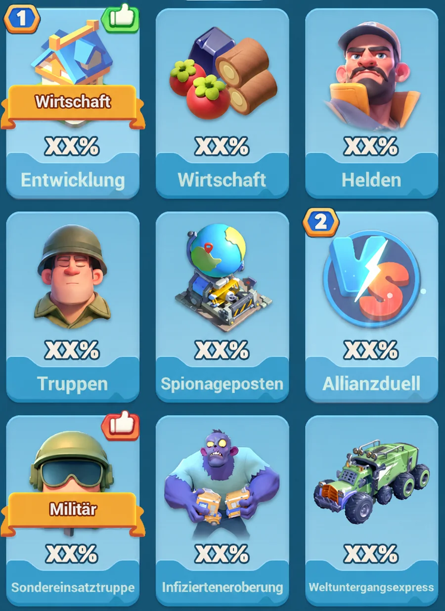
Die Forschungs-Zweige im Labor — der echte Name steht jeweils unter der Kachel. Allianzduell, Sondereinsatztruppe und Weltuntergangsexpress brauchen VS-Medaillen.The research branches in the lab — the real name is always below the tile. Alliance Duel, Special Forces and Doomsday Express need VS medals.Les branches de recherche du labo — le vrai nom est toujours sous la tuile. Alliance Duel, Special Forces et Doomsday Express nécessitent des médailles VS.I rami di ricerca in laboratorio — il vero nome è sempre sotto la tessera. Alliance Duel, Special Forces e Doomsday Express richiedono medaglie VS.Las ramas de investigación del laboratorio — el nombre real está siempre debajo de la ficha. Alliance Duel, Special Forces y Doomsday Express necesitan medallas VS.Os ramos de investigação do laboratório — o nome real está sempre por baixo do cartão. Alliance Duel, Special Forces e Doomsday Express precisam de medalhas VS.Laboratuvardaki araştırma dalları — gerçek ad her zaman kartın altında. Alliance Duel, Special Forces ve Doomsday Express VS madalyası ister.Ветки исследований в лаборатории — настоящее название всегда под плиткой. Alliance Duel, Special Forces и Doomsday Express требуют VS-медалей.
Merke: Ganz normal forschen kannst du die ganze Woche über — aber VS-Medaillen und Beschleuniger gehören auf den Forschungstag. Unter der Woche verbraucht, bringen sie keine VS-Punkte mehr.Remember: normal research you can do all week — but VS medals and speedups belong on research day. Used mid-week, they no longer bring VS points.À retenir : la recherche normale, tu peux la faire toute la semaine — mais les médailles VS et les accélérateurs vont sur le jour recherche. Utilisés en pleine semaine, ils ne rapportent plus de points VS.Ricorda: la ricerca normale puoi farla tutta la settimana — ma medaglie VS e acceleratori vanno nel giorno ricerca. Usati a metà settimana non danno più punti VS.Recuerda: investigar normal puedes toda la semana — pero las medallas VS y los aceleradores van en el día de investigación. Usados entre semana ya no dan puntos VS.Lembra: pesquisar normalmente podes a semana toda — mas medalhas VS e aceleradores pertencem ao dia da pesquisa. Usados a meio da semana já não dão pontos VS.Unutma: normal araştırmayı hafta boyunca yapabilirsin — ama VS madalyaları ve hızlandırıcılar araştırma gününe aittir. Hafta ortasında harcanırsa VS puanı getirmez.Запомни: обычные исследования можно делать всю неделю — но VS-медали и ускорения — на день исследований. Потраченные среди недели, они уже не дают очков VS.
📌 Das WichtigsteThe EssentialsL'essentielL'essenzialeLo esencialO essencialEn önemlisiСамое важное
🎯 Ziel:Goal:Objectif :Obiettivo:Objetivo:Objetivo:Hedef:Цель: Mehr Tagespunkte als der Gegner → Tag gewinnen. 13 Punkte gesamt, 7 zum Sieg.More daily points than your opponent → win the day. 13 points total, 7 to win.Plus de points quotidiens que l'adversaire → gagner la journée. 13 points au total, 7 pour la victoire.Più punti giornalieri dell'avversario → vincere la giornata. 13 punti in totale, 7 per la vittoria.Más puntos diarios que el rival → ganar el día. 13 puntos en total, 7 para la victoria.Mais pontos diários do que o adversário → ganhar o dia. 13 pontos no total, 7 para a vitória.Rakipten daha fazla günlük puan → günü kazan. Toplam 13 puan, zafer için 7.Больше дневных очков, чем у соперника → выиграть день. Всего 13 очков, 7 для победы. FIX
🏆 Belohnung:Reward:Récompense :Ricompensa:Recompensa:Recompensa:Ödül:Награда: Tagesaufgaben → persönliche Meilenstein-Truhen (immer, sieg-unabhängig) + Allianz-Sieg = reiche Truhen.Daily tasks → personal milestone chests (always, regardless of victory) + alliance win = rich chests.Tâches quotidiennes → coffres personnels de paliers (toujours, indépendamment de la victoire) + victoire d'alliance = coffres riches.Compiti giornalieri → forzieri personali a traguardi (sempre, a prescindere dalla vittoria) + vittoria dell'alleanza = forzieri ricchi.Tareas diarias → cofres personales de hitos (siempre, independientemente de la victoria) + victoria de alianza = cofres ricos.Tarefas diárias → baús pessoais de metas (sempre, independentemente da vitória) + vitória da aliança = baús ricos.Günlük görevler → kişisel milestone chest'ler (her zaman, zaferden bağımsız) + ittifak zaferi = zengin chest'ler.Дневные задания → личные milestone chest'ы (всегда, независимо от победы) + победа альянса = богатые сундуки. FIX
⚙️ Mechanik:Mechanic:Mécanique :Meccanica:Mecánica:Mecânica:Mekanik:Механика: Jeder Tag ein Thema mit Gewicht. Tag 6 „Gegner besiegen" zählt 4 → da fällt die Entscheidung.Each day a theme with a weight. Day 6 "Defeat Enemies" counts as 4 → that's where it's decided.Chaque jour un thème avec un poids. Le jour 6 « Gegner besiegen » compte 4 → c'est là que tout se joue.Ogni giorno un tema con un peso. Il giorno 6 « Gegner besiegen » conta 4 → è lì che si decide tutto.Cada día un tema con un peso. El día 6 « Gegner besiegen » cuenta 4 → ahí se decide todo.Cada dia um tema com um peso. O dia 6 « Gegner besiegen » conta 4 → é aí que tudo se decide.Her gün ağırlığı olan bir tema. 6. gün „Defeat Enemies" 4 sayılır → karar burada verilir.Каждый день — тема со своим весом. День 6 „Defeat Enemies" считается за 4 → именно тут всё решается. FIX
📅 Die 6 TageThe 6 DaysLes 6 joursI 6 giorniLos 6 díasOs 6 dias6 gün6 дней
📡 Tag 1Day 1Jour 1Giorno 1Día 1Dia 1Day 1Day 1
bereitreadyprêtprontolistoprontohazırготовоRadar-TrainingRadar TrainingRadar TrainingRadar TrainingRadar TrainingRadar TrainingRadar TrainingRadar Training (1)
Top (Basis): Ausrüstungsfetzen +285.800, Spionage +37.500Top (base): gear scraps +285,800, spy +37,500Top (base) : gear scraps +285.800, spy +37.500Top (base): gear scraps +285.800, spy +37.500Top (base): gear scraps +285.800, spy +37.500Top (base): gear scraps +285.800, espionagem +37.500En iyi (baz): gear scraps +285.800, spy +37.500Топ (база): gear scraps +285.800, spy +37.500
🏗️ Tag 2Day 2Jour 2Giorno 2Día 2Dia 2Day 2Day 2
bereitreadyprêtprontolistoprontohazırготовоBasisbauBase BuildingBase BuildingBase BuildingBase BuildingBase BuildingBase BuildingBase Building (2)
Hebel: Bauen — Bau-Speedups (+250/Min) + Kraft, im Golden Window dreifach. S-Entsendung (+75.000)/A-Lieferung (+50.000) als Extra.Lever: Building — build speedups (+250/min) + power, tripled in the Golden Window. S-dispatch (+75,000)/A-delivery (+50,000) as extras.Levier : construction — build speedups (+250/min) + puissance, triplés dans le Golden Window. S-dispatch (+75.000)/A-delivery (+50.000) en bonus.Leva: costruire — build speedups (+250/min) + potenza, triplicati nel Golden Window. S-dispatch (+75.000)/A-delivery (+50.000) come extra.Palanca: construir — build speedups (+250/min) + poder, triplicados en el Golden Window. S-dispatch (+75.000)/A-delivery (+50.000) como extra.Alavanca: construir — build speedups (+250/min) + poder, triplicados na Golden Window. S-dispatch (+75.000)/A-delivery (+50.000) como extra.Kaldıraç: Building — build speedups (+250/dk) + güç, Golden Window'da üç kat. S-sevkiyat (+75.000)/A-teslimat (+50.000) ekstra.Рычаг: Building — build speedups (+250/мин) + сила, в Golden Window утраивается. S-отправка (+75.000)/A-доставка (+50.000) как бонус.
🔬 Tag 3Day 3Jour 3Giorno 3Día 3Dia 3Day 3Day 3
bereitreadyprêtprontolistoprontohazırготовоTechnologieTechnologyTechnologyTechnologyTechnologyTechnologyTechnologyTechnology (2)
Top: Spionage +30.000, Ungeheuer-Zelle +12.000Top: spy +30,000, Behemoth Cell +12,000Top : spy +30.000, Behemoth Cell +12.000Top: spy +30.000, Behemoth Cell +12.000Top: spy +30.000, Behemoth Cell +12.000Top: espionagem +30.000, Behemoth Cell +12.000En iyi: spy +30.000, Behemoth Cell +12.000Топ: spy +30.000, Behemoth Cell +12.000
🦸 Tag 4Day 4Jour 4Giorno 4Día 4Dia 4Day 4Day 4
bereitreadyprêtprontolistoprontohazırготовоHeldenHeroesHeroesHeroesHeroesHeroesHeroesHeroes (2)
Top: legendäres Fragment +15.200, Wunsch-Rekrut +13.400Top: legendary fragment +15,200, wish recruit +13,400Top : legendary fragment +15.200, wish recruit +13.400Top: legendary fragment +15.200, wish recruit +13.400Top: legendary fragment +15.200, wish recruit +13.400Top: legendary fragment +15.200, wish recruit +13.400En iyi: legendary fragment +15.200, wish recruit +13.400Топ: legendary fragment +15.200, wish recruit +13.400
🎯 Tag 5Day 5Jour 5Giorno 5Día 5Dia 5Day 5Day 5
bereitreadyprêtprontolistoprontohazırготовоSchlachtvorb.Battle PrepBattle PrepBattle PrepBattle PrepBattle PrepBattle PrepBattle Prep (2)
Top: Spionage +37.500, Truppen trainierenTop: spy +37,500, train troopsTop : spy +37.500, entraîner les troupesTop: spy +37.500, addestrare le truppeTop: spy +37.500, entrenar tropasTop: espionagem +37.500, treinar tropasEn iyi: spy +37.500, birlik eğitТоп: spy +37.500, тренировать войска
🏆 Tag 6Day 6Jour 6Giorno 6Día 6Dia 6Day 6Day 6
bereitreadyprêtprontolistoprontohazırготовоGegner besiegenDefeat EnemiesDefeat EnemiesDefeat EnemiesDefeat EnemiesDefeat EnemiesDefeat EnemiesDefeat Enemies (4)
Pflicht: Friedenskuppeln. Entscheidender Tag!Must-have: Peace Shields. The decisive day!Obligatoire : Peace Shields. Le jour décisif !Obbligatorio: Peace Shields. Il giorno decisivo!Obligatorio: Peace Shields. ¡El día decisivo!Obrigatório: Peace Shields. O dia decisivo!Zorunlu: Peace Shields. Belirleyici gün!Обязательно: Peace Shields. Решающий день!
📖 Die Tage im DetailThe days in detailLes jours en détailI giorni nel dettaglioLos días en detalleOs dias em detalheGünler detaylıДни подробно
📡 Tag 1 — Radar-Training (Gewicht 1)Day 1 — Radar Training (weight 1)Jour 1 — Radar Training (poids 1)Giorno 1 — Radar Training (peso 1)Día 1 — Radar Training (peso 1)Dia 1 — Radar Training (peso 1)1. Gün — Radar Training (ağırlık 1)День 1 — Radar Training (вес 1) bereitreadyprêtprontolistoprontohazırготово
🏆 Punkte je Aktion (Basis):Points per action (base):Points par action (base) :Punti per azione (base):Puntos por acción (base):Pontos por ação (base):Eylem başına puan (baz):Очки за действие (база):
- AusrüstungsfetzenGear scrapsGear scrapsGear scrapsGear scrapsGear scrapsGear scrapsGear scraps verwenden: 100 EP +2.900 · 400 +11.500 · 2.000 +57.200 · 10.000 +285.800 (≈ 29/EP)use: 100 XP +2,900 · 400 +11,500 · 2,000 +57,200 · 10,000 +285,800 (≈ 29/XP)utiliser : 100 XP +2.900 · 400 +11.500 · 2.000 +57.200 · 10.000 +285.800 (≈ 29/XP)usare: 100 XP +2.900 · 400 +11.500 · 2.000 +57.200 · 10.000 +285.800 (≈ 29/XP)usar: 100 XP +2.900 · 400 +11.500 · 2.000 +57.200 · 10.000 +285.800 (≈ 29/XP)usar: 100 XP +2.900 · 400 +11.500 · 2.000 +57.200 · 10.000 +285.800 (≈ 29/XP)kullan: 100 XP +2.900 · 400 +11.500 · 2.000 +57.200 · 10.000 +285.800 (≈ 29/XP)использовать: 100 XP +2.900 · 400 +11.500 · 2.000 +57.200 · 10.000 +285.800 (≈ 29/XP)
- 1 Spionagemission: +37.5001 spy mission: +37,5001 mission d'espionnage : +37.5001 missione di spionaggio: +37.5001 misión de espionaje: +37.5001 missão de espionagem: +37.5001 casus görevi: +37.5001 шпион-миссия: +37.500
- 1 Kommandantenausdauer: +3001 commander stamina: +3001 endurance de commandant : +3001 resistenza del comandante: +3001 resistencia de comandante: +3001 resistência de comandante: +3001 komutan dayanıklılığı: +3001 выносливость командира: +300
- 100 Nahrung / 100 Holz / 20 Metall / 5 Benzin: je +1 · 1 Diamant: +20100 food / 100 wood / 20 metal / 5 fuel: +1 each · 1 diamond: +20100 nourriture / 100 bois / 20 métal / 5 carburant : +1 chacun · 1 diamant : +20100 cibo / 100 legno / 20 metallo / 5 carburante: +1 ciascuno · 1 diamante: +20100 comida / 100 madera / 20 metal / 5 combustible: +1 cada uno · 1 diamante: +20100 comida / 100 madeira / 20 metal / 5 combustível: +1 cada · 1 diamante: +20100 yiyecek / 100 odun / 20 metal / 5 yakıt: her biri +1 · 1 elmas: +20100 еда / 100 дерево / 20 металл / 5 топливо: по +1 · 1 алмаз: +20
🎯 Hebel:Lever:Levier :Leva:Palanca:Alavanca:Kaldıraç:Рычаг: Ausrüstungsfetzen sind der skalierende Bringer. Spionage und Ausdauer als Extra mitnehmen.Gear scraps are the scaling driver. Take spy and stamina as extras.Les gear scraps sont le générateur qui monte en puissance. Prends l'espionnage et l'endurance en bonus.I gear scraps sono la fonte che scala. Prendi spionaggio e resistenza come extra.Los gear scraps son la fuente que escala. Lleva espionaje y resistencia como extra.Os gear scraps são a fonte que escala. Leva a espionagem e a resistência como extra.Gear scraps ölçeklenen ana puandır. Casus ve dayanıklılığı ekstra al.Gear scraps — масштабируемый источник очков. Шпион и выносливость — как бонус.
⭐ Golden Window:Golden Window:Golden Window :Golden Window:Golden Window:Golden Window:Golden Window:Golden Window: Radar ↔ Power-Play-Runde „Ausrüstungsaufwertung" → Fetzen verwenden = meiste Punkte (im Golden Window für 3 Events gleichzeitig). Das 4-Stunden-Fenster verschiebt sich täglich — aktuelles Fenster im HEUTE-Block des Hubs.Radar ↔ Power Play round "Gear Enhancement" → use scraps = most points (in the Golden Window for 3 events at once). The 4-hour window shifts daily — current window in the hub's TODAY block.Radar ↔ tour Power Play « Ausrüstungsaufwertung » → utiliser les scraps = le plus de points (dans le Golden Window pour 3 events à la fois). La fenêtre de 4 heures se décale chaque jour — fenêtre actuelle dans le bloc AUJOURD'HUI du hub.Radar ↔ round Power Play « Ausrüstungsaufwertung » → usare gli scraps = più punti (nel Golden Window per 3 event contemporaneamente). La finestra di 4 ore si sposta ogni giorno — finestra attuale nel blocco OGGI dell'hub.Radar ↔ ronda Power Play « Ausrüstungsaufwertung » → usar scraps = más puntos (en el Golden Window para 3 events a la vez). La ventana de 4 horas se desplaza cada día — ventana actual en el bloque HOY del hub.Radar ↔ ronda Power Play « Ausrüstungsaufwertung » → usar scraps = mais pontos (na Golden Window para 3 events em simultâneo). A janela de 4 horas desloca-se todos os dias — janela atual no bloco HOJE do hub.Radar ↔ Power Play turu „Gear Enhancement" → scraps kullanmak = en çok puan (Golden Window'da aynı anda 3 etkinlik için). 4 saatlik pencere her gün kayar — güncel pencere hub'ın BUGÜN bloğunda.Radar ↔ раунд Power Play „Gear Enhancement" → использование scraps = больше всего очков (в Golden Window сразу для 3 событий). 4-часовое окно сдвигается ежедневно — актуальное окно в блоке СЕГОДНЯ хаба.
💾 Sparen:Save:Économiser :Risparmiare:Ahorrar:Poupar:Sakla:Копи: Fetzen für diesen Tag bunkern — Duell hat klar Vorrang. Je nach Spielweise kann es okay sein, bewusst einen Teil für die Turbo-Schildkröten-Belohnungen abzuzweigen — aber nie „einfach so" verbrennen.Stockpile scraps for this day — DO NOT burn them in Turbo Turtle (the duel takes priority).Mets les scraps de côté pour ce jour — NE les brûle PAS dans Turbo Turtle (le duel est prioritaire).Metti da parte gli scraps per questo giorno — NON bruciarli in Turbo Turtle (il duello ha la priorità).Guarda los scraps para este día — NO los quemes en Turbo Turtle (el duelo tiene prioridad).Guarda os scraps para este dia — NÃO os gastes na Turbo Turtle (o duelo tem prioridade).Scraps'i bu gün için biriktir — Turbo Turtle'da HARCAMA (duel önceliklidir).Копи scraps на этот день — НЕ трать в Turbo Turtle (дуэль в приоритете).
📦 Aufheben für später:Save for later:Garder pour plus tard :Conservare per dopo:Guardar para más tarde:Guardar para mais tarde:Sonraya sakla:Копить на потом: Bau-Speedups → für TAG 2 (Siedlungsbau). Tipp: heute schon Gebäude-Bau starten und erst morgen fertigstellen/auspacken — dann zählt der Bau für Tag 2. Forschungs-Speedups + Ungeheuer-Zellen + Ungeheuer-Serum → für TAG 3 (Technologie).Build speedups → for DAY 2 (Settlement Building). Tip: start a building today and only finish/claim it tomorrow — then the build counts for Day 2. Research speedups + Behemoth Cells + Behemoth Serum → for DAY 3 (Technology).Build speedups → pour le JOUR 2 (Settlement Building). Astuce : commence une construction dès aujourd'hui et ne la termine/récupère que demain — alors la construction compte pour le jour 2. Research speedups + Behemoth Cells + Behemoth Serum → pour le JOUR 3 (Technology).Build speedups → per il GIORNO 2 (Settlement Building). Consiglio: avvia una costruzione già oggi e finiscila/ritirala solo domani — così la costruzione conta per il giorno 2. Research speedups + Behemoth Cells + Behemoth Serum → per il GIORNO 3 (Technology).Build speedups → para el DÍA 2 (Settlement Building). Consejo: empieza hoy una construcción y termínala/recógela solo mañana — así la construcción cuenta para el día 2. Research speedups + Behemoth Cells + Behemoth Serum → para el DÍA 3 (Technology).Build speedups → para o DIA 2 (Settlement Building). Dica: começa hoje uma construção e só a termines/recolhas amanhã — assim a construção conta para o dia 2. Research speedups + Behemoth Cells + Behemoth Serum → para o DIA 3 (Technology).Build speedups → 2. GÜN için (Settlement Building). İpucu: bugün inşaata başla ve ancak yarın bitir/al — böylece inşaat 2. güne sayılır. Research speedups + Behemoth Cell + Behemoth Serum → 3. GÜN için (Technology).Build speedups → на ДЕНЬ 2 (Settlement Building). Совет: начни стройку сегодня и заверши/забери только завтра — тогда стройка засчитается в День 2. Research speedups + Behemoth Cells + Behemoth Serum → на ДЕНЬ 3 (Technology).
🏗️ Tag 2 — Basisbau (Gewicht 2)Day 2 — Base Building (weight 2)Jour 2 — Base Building (poids 2)Giorno 2 — Base Building (peso 2)Día 2 — Base Building (peso 2)Dia 2 — Base Building (peso 2)2. Gün — Base Building (ağırlık 2)День 2 — Base Building (вес 2) bereitreadyprêtprontolistoprontohazırготово
🏆 Punkte je Aktion (Basis):Points per action (base):Points par action (base) :Punti per azione (base):Puntos por acción (base):Pontos por ação (base):Eylem başına puan (baz):Очки за действие (база):
- 1 S-Entsendung (Schwierige Entsendung): +75.0001 S-dispatch (Dire Dispatch): +75,0001 S-dispatch (Dire Dispatch) : +75.0001 S-dispatch (Dire Dispatch): +75.0001 S-dispatch (Dire Dispatch): +75.0001 S-dispatch (Dire Dispatch): +75.0001 S-sevkiyat (Dire Dispatch): +75.0001 S-отправка (Dire Dispatch): +75.000
- 1 A-Lieferung (Weltuntergangsexpress) losschicken: +50.000send 1 A-delivery (Doomsday Express): +50,000envoyer 1 A-delivery (Doomsday Express) : +50.000inviare 1 A-delivery (Doomsday Express): +50.000enviar 1 A-delivery (Doomsday Express): +50.000enviar 1 A-delivery (Doomsday Express): +50.0001 A-teslimat gönder (Doomsday Express): +50.000отправить 1 A-доставка (Doomsday Express): +50.000
- Bau um 1 Min. beschleunigen: +250 · Kraft +1 durch Bau: +9 · 1 Diamant: +20speed up build by 1 min: +250 · power +1 from building: +9 · 1 diamond: +20accélérer la construction de 1 min : +250 · puissance +1 par la construction : +9 · 1 diamant : +20accelerare la costruzione di 1 min: +250 · potenza +1 dalla costruzione: +9 · 1 diamante: +20acelerar la construcción 1 min: +250 · poder +1 por la construcción: +9 · 1 diamante: +20acelerar a construção em 1 min: +250 · poder +1 pela construção: +9 · 1 diamante: +20inşaatı 1 dk hızlandır: +250 · inşaattan güç +1: +9 · 1 elmas: +20ускорить стройку на 1 мин: +250 · сила +1 от стройки: +9 · 1 алмаз: +20
🎯 Hebel:Lever:Levier :Leva:Palanca:Alavanca:Kaldıraç:Рычаг: Bauen selbst — Bau-Speedups (+250/Min, beliebig oft) skalieren. S-Entsendung (+75.000)/A-Lieferung (+50.000) sind einmalig → als Extra mitnehmen.Building itself — build speedups (+250/min, repeatable) scale. S-dispatch (+75,000)/A-delivery (+50,000) are one-time → take as extras.La construction elle-même — les build speedups (+250/min, répétables) montent en puissance. S-dispatch (+75.000)/A-delivery (+50.000) sont uniques → à prendre en bonus.La costruzione stessa — i build speedups (+250/min, ripetibili) scalano. S-dispatch (+75.000)/A-delivery (+50.000) sono una tantum → prendili come extra.La construcción en sí — los build speedups (+250/min, repetibles) escalan. S-dispatch (+75.000)/A-delivery (+50.000) son de una sola vez → llévalos como extra.A própria construção — os build speedups (+250/min, repetíveis) escalam. S-dispatch (+75.000)/A-delivery (+50.000) são únicos → leva-os como extra.Building'in kendisi — build speedups (+250/dk, tekrarlanabilir) ölçeklenir. S-sevkiyat (+75.000)/A-teslimat (+50.000) tek seferlik → ekstra al.Сама стройка — build speedups (+250/мин, многократно) масштабируются. S-отправка (+75.000)/A-доставка (+50.000) разовые → как бонус.
⭐ Golden Window:Golden Window:Golden Window :Golden Window:Golden Window:Golden Window:Golden Window:Golden Window: Basisbau ↔ Power-Play-Runde „Siedlungsbau" → Bau-Speedups zählen dreifach. 4-Stunden-Fenster, verschiebt sich täglich — aktuelles Fenster im HEUTE-Block.Base Building ↔ Power Play round "Settlement Building" → build speedups count triple. 4-hour window, shifts daily — current window in the TODAY block.Base Building ↔ tour Power Play « Siedlungsbau » → les build speedups comptent triple. Fenêtre de 4 heures, se décale chaque jour — fenêtre actuelle dans le bloc AUJOURD'HUI.Base Building ↔ round Power Play « Siedlungsbau » → i build speedups contano triplo. Finestra di 4 ore, si sposta ogni giorno — finestra attuale nel blocco OGGI.Base Building ↔ ronda Power Play « Siedlungsbau » → los build speedups cuentan triple. Ventana de 4 horas, se desplaza cada día — ventana actual en el bloque HOY.Base Building ↔ ronda Power Play « Siedlungsbau » → os build speedups contam a triplicar. Janela de 4 horas, desloca-se todos os dias — janela atual no bloco HOJE.Base Building ↔ Power Play turu „Settlement Building" → build speedups üç kat sayılır. 4 saatlik pencere, her gün kayar — güncel pencere BUGÜN bloğunda.Base Building ↔ раунд Power Play „Settlement Building" → build speedups считаются втрое. 4-часовое окно, сдвигается ежедневно — актуальное окно в блоке СЕГОДНЯ.
💾 Sparen:Save:Économiser :Risparmiare:Ahorrar:Poupar:Sakla:Копи: Bau-Speedups bunkern und im Golden Window dumpen — JETZT NICHT einzeln verbrauchen.Stockpile build speedups and dump them in the Golden Window — DO NOT spend them one by one now.Mets les build speedups de côté et déverse-les dans le Golden Window — NE les dépense PAS un par un maintenant.Metti da parte i build speedups e scaricali nel Golden Window — NON spenderli uno a uno adesso.Guarda los build speedups y suéltalos en el Golden Window — NO los gastes uno a uno ahora.Junta os build speedups e despeja-os na Golden Window — NÃO os gastes um a um agora.Build speedups'ı biriktir ve Golden Window'da harca — ŞİMDİ tek tek HARCAMA.Копи build speedups и слей их в Golden Window — НЕ трать по одному сейчас.
📦 Aufheben für später:Save for later:Garder pour plus tard :Conservare per dopo:Guardar para más tarde:Guardar para mais tarde:Sonraya sakla:Копить на потом: Forschungs-Speedups + Ungeheuer-Zellen + Ungeheuer-Serum + Kampfmedaillen → für TAG 3. Heldenfragmente + Rekrutierungsmarken + Helden-Handbuch → für TAG 4.Research speedups + Behemoth Cells + Behemoth Serum + Battle Medals → for DAY 3. Hero fragments + recruit tokens + Hero Manual → for DAY 4.Research speedups + Behemoth Cells + Behemoth Serum + Battle Medals → pour le JOUR 3. Fragments de héros + jetons de recrutement + Hero Manual → pour le JOUR 4.Research speedups + Behemoth Cells + Behemoth Serum + Battle Medals → per il GIORNO 3. Frammenti di eroe + gettoni di reclutamento + Hero Manual → per il GIORNO 4.Research speedups + Behemoth Cells + Behemoth Serum + Battle Medals → para el DÍA 3. Fragmentos de héroe + fichas de reclutamiento + Hero Manual → para el DÍA 4.Research speedups + Behemoth Cells + Behemoth Serum + Battle Medals → para o DIA 3. Fragmentos de herói + fichas de recrutamento + Hero Manual → para o DIA 4.Research speedups + Behemoth Cell + Behemoth Serum + Battle Medal → 3. GÜN için. Hero parçaları + rekrutasyon marka + Hero Manual → 4. GÜN için.Research speedups + Behemoth Cells + Behemoth Serum + Battle Medals → на ДЕНЬ 3. Фрагменты героев + жетоны вербовки + Hero Manual → на ДЕНЬ 4.
🔬 Tag 3 — Technologieforschung (Gewicht 2)Day 3 — Technology (weight 2)Jour 3 — recherche Technology (poids 2)Giorno 3 — ricerca Technology (peso 2)Día 3 — investigación Technology (peso 2)Dia 3 — Technology (peso 2)3. Gün — Technology (ağırlık 2)День 3 — Technology (вес 2) bereitreadyprêtprontolistoprontohazırготово
🏆 Punkte je Aktion (Basis):Points per action (base):Points par action (base) :Punti per azione (base):Puntos por acción (base):Pontos por ação (base):Eylem başına puan (baz):Очки за действие (база):
- 1 Spionagemission: +30.000 · 1 Ungeheuer-Zelle verwenden: +12.0001 spy mission: +30,000 · use 1 Behemoth Cell: +12,0001 mission d'espionnage : +30.000 · utiliser 1 Behemoth Cell : +12.0001 missione di spionaggio: +30.000 · usare 1 Behemoth Cell: +12.0001 misión de espionaje: +30.000 · usar 1 Behemoth Cell: +12.0001 missão de espionagem: +30.000 · usar 1 Behemoth Cell: +12.0001 casus görevi: +30.000 · 1 Behemoth Cell kullan: +12.0001 шпион-миссия: +30.000 · использовать 1 Behemoth Cell: +12.000
- je 100 Ungeheuer-EP in einem Versuch: +1.000 · 1 Kampfmedaille ausgeben: +2.500per 100 Behemoth XP in one attempt: +1,000 · spend 1 Battle Medal: +2,500par 100 XP de Behemoth en une tentative : +1.000 · dépenser 1 Battle Medal : +2.500ogni 100 XP di Behemoth in un tentativo: +1.000 · spendere 1 Battle Medal: +2.500por cada 100 XP de Behemoth en un intento: +1.000 · gastar 1 Battle Medal: +2.500por cada 100 Behemoth XP numa tentativa: +1.000 · gastar 1 Battle Medal: +2.500tek denemede her 100 Behemoth XP: +1.000 · 1 Battle Medal harca: +2.500за 100 Behemoth XP в одной попытке: +1.000 · потратить 1 Battle Medal: +2.500
- Forschungstimer −1 Min.: +250 · Kraft +1 durch Forschung: +4 · 1 Diamant: +20research timer −1 min: +250 · power +1 from research: +4 · 1 diamond: +20minuteur de recherche −1 min : +250 · puissance +1 par la recherche : +4 · 1 diamant : +20timer di ricerca −1 min: +250 · potenza +1 dalla ricerca: +4 · 1 diamante: +20temporizador de investigación −1 min: +250 · poder +1 por la investigación: +4 · 1 diamante: +20temporizador de investigação −1 min: +250 · poder +1 pela investigação: +4 · 1 diamante: +20araştırma sayacı −1 dk: +250 · araştırmadan güç +1: +4 · 1 elmas: +20таймер исследования −1 мин: +250 · сила +1 от исследования: +4 · 1 алмаз: +20
🎯 Hebel:Lever:Levier :Leva:Palanca:Alavanca:Kaldıraç:Рычаг: Forschungs-Speedups skalieren. Spionage, Ungeheuer-Zellen und Kampfmedaillen als starke Einmal-Brocken.Research speedups scale. Spy, Behemoth Cells and Battle Medals as strong one-time chunks.Les research speedups montent en puissance. Espionnage, Behemoth Cells et Battle Medals comme gros apports uniques.I research speedups scalano. Spionaggio, Behemoth Cells e Battle Medals come forti apporti una tantum.Los research speedups escalan. Espionaje, Behemoth Cells y Battle Medals como fuertes aportes de una sola vez.Os research speedups escalam. Espionagem, Behemoth Cells e Battle Medals como fortes contribuições únicas.Research speedups ölçeklenir. Casus, Behemoth Cell ve Battle Medal güçlü tek seferlik puanlar.Research speedups масштабируются. Шпион, Behemoth Cells и Battle Medals — сильные разовые куски.
⭐ Golden Window:Golden Window:Golden Window :Golden Window:Golden Window:Golden Window:Golden Window:Golden Window: Technologie ↔ Power-Play-Runde „Technologieforschung" → Forschungs-Speedups zählen dreifach. 4-Stunden-Fenster, verschiebt sich täglich — aktuelles Fenster im HEUTE-Block.Technology ↔ Power Play round "Technology Research" → research speedups count triple. 4-hour window, shifts daily — current window in the TODAY block.Technology ↔ tour Power Play « Technologieforschung » → les research speedups comptent triple. Fenêtre de 4 heures, se décale chaque jour — fenêtre actuelle dans le bloc AUJOURD'HUI.Technology ↔ round Power Play « Technologieforschung » → i research speedups contano triplo. Finestra di 4 ore, si sposta ogni giorno — finestra attuale nel blocco OGGI.Technology ↔ ronda Power Play « Technologieforschung » → los research speedups cuentan triple. Ventana de 4 horas, se desplaza cada día — ventana actual en el bloque HOY.Technology ↔ ronda Power Play « Technologieforschung » → os research speedups contam a triplicar. Janela de 4 horas, desloca-se todos os dias — janela atual no bloco HOJE.Technology ↔ Power Play turu „Technology Research" → research speedups üç kat sayılır. 4 saatlik pencere, her gün kayar — güncel pencere BUGÜN bloğunda.Technology ↔ раунд Power Play „Technology Research" → research speedups считаются втрое. 4-часовое окно, сдвигается ежедневно — актуальное окно в блоке СЕГОДНЯ.
💾 Sparen:Save:Économiser :Risparmiare:Ahorrar:Poupar:Sakla:Копи: Forschungs-Speedups + Ungeheuer-Zellen vorher bunkern. Kampfmedaillen bis Tag 3 sammeln (je +2.500), dann im Labor für VS ausgeben.Stockpile research speedups + Behemoth Cells beforehand. Collect Battle Medals until Day 3 (+2,500 each), then spend in the lab for VS.Mets d'abord de côté les research speedups + Behemoth Cells. Collecte les Battle Medals jusqu'au jour 3 (+2.500 chacune), puis dépense-les au labo pour le VS.Metti prima da parte research speedups + Behemoth Cells. Raccogli le Battle Medals fino al giorno 3 (+2.500 ciascuna), poi spendile nel laboratorio per il VS.Guarda antes research speedups + Behemoth Cells. Reúne Battle Medals hasta el día 3 (+2.500 cada una), luego gástalas en el laboratorio para el VS.Junta antes research speedups + Behemoth Cells. Reúne Battle Medals até ao dia 3 (+2.500 cada), depois gasta-as no laboratório para o VS.Research speedups + Behemoth Cell'i önceden biriktir. Battle Medal'ları Day 3'e kadar topla (her biri +2.500), sonra lab'da VS için harca.Заранее копи research speedups + Behemoth Cells. Собирай Battle Medals до Дня 3 (+2.500 каждая), потом трать в лаборатории для VS.
📦 Aufheben für später:Save for later:Garder pour plus tard :Conservare per dopo:Guardar para más tarde:Guardar para mais tarde:Sonraya sakla:Копить на потом: Heldenfragmente + Rekrutierungsmarken → für TAG 4. Spionagemissionen aufsparen + Ressourcen fürs Truppen-Training (Nahrung/Holz/Metall) → für TAG 5.Hero fragments + recruit tokens → for DAY 4. Save spy missions + resources for troop training (food/wood/metal) → for DAY 5.Fragments de héros + jetons de recrutement → pour le JOUR 4. Garde les missions d'espionnage + ressources pour l'entraînement des troupes (nourriture/bois/métal) → pour le JOUR 5.Frammenti di eroe + gettoni di reclutamento → per il GIORNO 4. Conserva le missioni di spionaggio + risorse per l'addestramento delle truppe (cibo/legno/metallo) → per il GIORNO 5.Fragmentos de héroe + fichas de reclutamiento → para el DÍA 4. Guarda las misiones de espionaje + recursos para el entrenamiento de tropas (comida/madera/metal) → para el DÍA 5.Fragmentos de herói + fichas de recrutamento → para o DIA 4. Poupa missões de espionagem + recursos para o treino de tropas (comida/madeira/metal) → para o DIA 5.Hero parçaları + rekrutasyon marka → 4. GÜN için. Casus görevlerini sakla + birlik eğitimi için kaynaklar (yiyecek/odun/metal) → 5. GÜN için.Фрагменты героев + жетоны вербовки → на ДЕНЬ 4. Сохрани spy-миссии + ресурсы для тренировки войск (еда/дерево/металл) → на ДЕНЬ 5.
🦸 Tag 4 — Helden-Entwicklung (Gewicht 2)Day 4 — Hero Development (weight 2)Jour 4 — développement des Heroes (poids 2)Giorno 4 — sviluppo Heroes (peso 2)Día 4 — desarrollo de Heroes (peso 2)Dia 4 — Hero Development (peso 2)4. Gün — Hero Development (ağırlık 2)День 4 — Hero Development (вес 2) bereitreadyprêtprontolistoprontohazırготово
🏆 Punkte je Aktion (Basis):Points per action (base):Points par action (base) :Punti per azione (base):Puntos por acción (base):Pontos por ação (base):Eylem başına puan (baz):Очки за действие (база):
- 1 legendäres Heldenfragment: +15.200 · 1 Wunsch-Rekrutierung: +13.4001 legendary hero fragment: +15,200 · 1 wish recruitment: +13,4001 fragment de héros légendaire : +15.200 · 1 recrutement au choix : +13.4001 frammento di eroe leggendario: +15.200 · 1 reclutamento a scelta: +13.4001 fragmento de héroe legendario: +15.200 · 1 reclutamiento a elección: +13.4001 fragmento de herói lendário: +15.200 · 1 recrutamento à escolha: +13.4001 efsanevi kahraman parçası: +15.200 · 1 istek rekrutasyonu: +13.4001 легендарный фрагмент героя: +15.200 · 1 желаемая вербовка: +13.400
- 1 fortgeschrittene Rekrutierung: +3.000 · 1 Heldenfähigkeiten-Handbuch: +2.5001 advanced recruitment: +3,000 · 1 Hero Skill Manual: +2,5001 recrutement avancé : +3.000 · 1 Hero Skill Manual : +2.5001 reclutamento avanzato: +3.000 · 1 Hero Skill Manual: +2.5001 reclutamiento avanzado: +3.000 · 1 Hero Skill Manual: +2.5001 recrutamento avançado: +3.000 · 1 Hero Skill Manual: +2.5001 gelişmiş rekrutasyon: +3.000 · 1 Hero Skill Manual: +2.5001 продвинутая вербовка: +3.000 · 1 Hero Skill Manual: +2.500
- 1 episches Fragment: +1.600 · 1 Standard-Rekrutierung: +500 · 1 seltenes Fragment: +160 · 1 Diamant: +201 epic fragment: +1,600 · 1 standard recruitment: +500 · 1 rare fragment: +160 · 1 diamond: +201 fragment épique : +1.600 · 1 recrutement standard : +500 · 1 fragment rare : +160 · 1 diamant : +201 frammento epico: +1.600 · 1 reclutamento standard: +500 · 1 frammento raro: +160 · 1 diamante: +201 fragmento épico: +1.600 · 1 reclutamiento estándar: +500 · 1 fragmento raro: +160 · 1 diamante: +201 fragmento épico: +1.600 · 1 recrutamento padrão: +500 · 1 fragmento raro: +160 · 1 diamante: +201 epik parça: +1.600 · 1 standart rekrutasyon: +500 · 1 nadir parça: +160 · 1 elmas: +201 эпический фрагмент: +1.600 · 1 стандартная вербовка: +500 · 1 редкий фрагмент: +160 · 1 алмаз: +20
🎯 Hebel:Lever:Levier :Leva:Palanca:Alavanca:Kaldıraç:Рычаг: Legendäre Fragmente + Wunsch-Rekrutierung. Fragmente farmen über Rallys auf die MITTLEREN Monster (Alpha-Bestie) — normale/fette Infizierte geben keine.Legendary fragments + wish recruitment. Farm fragments via rallies on the MEDIUM monsters (Alpha Beast) — normal/fat infected give none.Fragments légendaires + recrutement au choix. Farme les fragments via des Rally sur les monstres MOYENS (Alpha Beast) — les infectés normaux/gros n'en donnent aucun.Frammenti leggendari + reclutamento a scelta. Farma i frammenti tramite Rally sui mostri MEDI (Alpha Beast) — gli infetti normali/grassi non ne danno.Fragmentos legendarios + reclutamiento a elección. Farmea fragmentos con Rally sobre los monstruos MEDIANOS (Alpha Beast) — los infectados normales/gordos no dan.Fragmentos lendários + recrutamento à escolha. Farma fragmentos com Rally sobre os monstros MÉDIOS (Alpha Beast) — os infetados normais/gordos não dão nenhum.Efsanevi parçalar + istek rekrutasyonu. Parçaları ORTA canavarlara (Alpha Beast) rally ile farmla — normal/şişman enfekteler vermez.Легендарные фрагменты + желаемая вербовка. Фарми фрагменты через rally на СРЕДНИХ монстров (Alpha Beast) — обычные/толстые заражённые не дают.
⭐ Golden Window:Golden Window:Golden Window :Golden Window:Golden Window:Golden Window:Golden Window:Golden Window: Helden ↔ Power-Play-Runde „Heldenverbesserung" → Helden-Material zählt dreifach. 4-Stunden-Fenster, verschiebt sich täglich — aktuelles Fenster im HEUTE-Block.Heroes ↔ Power Play round "Hero Enhancement" → hero material counts triple. 4-hour window, shifts daily — current window in the TODAY block.Heroes ↔ tour Power Play « Heldenverbesserung » → le matériel de héros compte triple. Fenêtre de 4 heures, se décale chaque jour — fenêtre actuelle dans le bloc AUJOURD'HUI.Heroes ↔ round Power Play « Heldenverbesserung » → il materiale eroi conta triplo. Finestra di 4 ore, si sposta ogni giorno — finestra attuale nel blocco OGGI.Heroes ↔ ronda Power Play « Heldenverbesserung » → el material de héroes cuenta triple. Ventana de 4 horas, se desplaza cada día — ventana actual en el bloque HOY.Heroes ↔ ronda Power Play « Heldenverbesserung » → o material de heróis conta a triplicar. Janela de 4 horas, desloca-se todos os dias — janela atual no bloco HOJE.Heroes ↔ Power Play turu „Hero Enhancement" → hero material üç kat sayılır. 4 saatlik pencere, her gün kayar — güncel pencere BUGÜN bloğunda.Heroes ↔ раунд Power Play „Hero Enhancement" → материал героев считается втрое. 4-часовое окно, сдвигается ежедневно — актуальное окно в блоке СЕГОДНЯ.
📦 Aufheben für später:Save for later:Garder pour plus tard :Conservare per dopo:Guardar para más tarde:Guardar para mais tarde:Sonraya sakla:Копить на потом: Spionage + Trainings-Speedups + Ressourcen fürs Training → für TAG 5. Friedenskuppeln + alle Beschleuniger → für TAG 6.Spy + training speedups + resources for training → for DAY 5. Peace Shields + all speedups → for DAY 6.Espionnage + training speedups + ressources pour l'entraînement → pour le JOUR 5. Peace Shields + tous les speedups → pour le JOUR 6.Spionaggio + training speedups + risorse per l'addestramento → per il GIORNO 5. Peace Shields + tutti gli speedups → per il GIORNO 6.Espionaje + training speedups + recursos para el entrenamiento → para el DÍA 5. Peace Shields + todos los speedups → para el DÍA 6.Espionagem + training speedups + recursos para o treino → para o DIA 5. Peace Shields + todos os speedups → para o DIA 6.Casus + eğitim speedups + eğitim için kaynaklar → 5. GÜN için. Peace Shields + tüm speedups → 6. GÜN için.Spy + training speedups + ресурсы для тренировки → на ДЕНЬ 5. Peace Shields + все speedups → на ДЕНЬ 6.
🎯 Tag 5 — Schlachtvorbereitung (Gewicht 2)Day 5 — Battle Prep (weight 2)Jour 5 — Battle Prep (poids 2)Giorno 5 — Battle Prep (peso 2)Día 5 — Battle Prep (peso 2)Dia 5 — Battle Prep (peso 2)5. Gün — Battle Prep (ağırlık 2)День 5 — Battle Prep (вес 2) bereitreadyprêtprontolistoprontohazırготово
🏆 Punkte je Aktion (Basis):Points per action (base):Points par action (base) :Punti per azione (base):Puntos por acción (base):Pontos por ação (base):Eylem başına puan (baz):Очки за действие (база):
- 1 Spionagemission: +37.5001 spy mission: +37,5001 mission d'espionnage : +37.5001 missione di spionaggio: +37.5001 misión de espionaje: +37.5001 missão de espionagem: +37.5001 casus görevi: +37.5001 шпион-миссия: +37.500
- Truppen trainieren (skaliert): Lvl.1 +6 · 2 +11 · 3 +17 · 4 +22 · 5 +26 · 6 +33 · 7 +37 · 8 +44 · 9 +52 · 10 +60train troops (scaled): Lv.1 +6 · 2 +11 · 3 +17 · 4 +22 · 5 +26 · 6 +33 · 7 +37 · 8 +44 · 9 +52 · 10 +60entraîner les troupes (progressif) : Niv.1 +6 · 2 +11 · 3 +17 · 4 +22 · 5 +26 · 6 +33 · 7 +37 · 8 +44 · 9 +52 · 10 +60addestrare le truppe (in scala): Liv.1 +6 · 2 +11 · 3 +17 · 4 +22 · 5 +26 · 6 +33 · 7 +37 · 8 +44 · 9 +52 · 10 +60entrenar tropas (escalado): Nv.1 +6 · 2 +11 · 3 +17 · 4 +22 · 5 +26 · 6 +33 · 7 +37 · 8 +44 · 9 +52 · 10 +60treinar tropas (escalado): Nv.1 +6 · 2 +11 · 3 +17 · 4 +22 · 5 +26 · 6 +33 · 7 +37 · 8 +44 · 9 +52 · 10 +60birlik eğit (ölçekli): Sv.1 +6 · 2 +11 · 3 +17 · 4 +22 · 5 +26 · 6 +33 · 7 +37 · 8 +44 · 9 +52 · 10 +60тренировать войска (по уровню): Ур.1 +6 · 2 +11 · 3 +17 · 4 +22 · 5 +26 · 6 +33 · 7 +37 · 8 +44 · 9 +52 · 10 +60
- Bau / Forschung / Training je −1 Min.: je +250 (Training: Zeithilfen ausgenommen) · Kraft durch Bau +9 / Forschung +4 · 1 Diamant: +20build / research / training −1 min each: +250 each (training: time-helps excluded) · power from build +9 / research +4 · 1 diamond: +20construction / recherche / entraînement −1 min chacun : +250 chacun (entraînement : aides-temps exclues) · puissance par la construction +9 / recherche +4 · 1 diamant : +20costruzione / ricerca / addestramento −1 min ciascuno: +250 ciascuno (addestramento: aiuti-tempo esclusi) · potenza dalla costruzione +9 / ricerca +4 · 1 diamante: +20construcción / investigación / entrenamiento −1 min cada uno: +250 cada uno (entrenamiento: ayudas de tiempo excluidas) · poder por construcción +9 / investigación +4 · 1 diamante: +20construção / investigação / treino −1 min cada: +250 cada (treino: ajudas de tempo excluídas) · poder pela construção +9 / investigação +4 · 1 diamante: +20inşaat / araştırma / eğitim her biri −1 dk: her biri +250 (eğitim: zaman yardımları hariç) · inşaattan güç +9 / araştırmadan +4 · 1 elmas: +20стройка / исследование / тренировка по −1 мин: по +250 (тренировка: тайм-хелпы исключены) · сила от стройки +9 / исследования +4 · 1 алмаз: +20
🎯 Hebel:Lever:Levier :Leva:Palanca:Alavanca:Kaldıraç:Рычаг: Spionage (+37.500) und Truppen-Training (höhere Stufen bringen mehr). Speedups als Zusatz.Spy (+37,500) and troop training (higher tiers give more). Speedups as add-on.Espionnage (+37.500) et entraînement des troupes (les niveaux supérieurs rapportent plus). Les speedups en complément.Spionaggio (+37.500) e addestramento delle truppe (i livelli più alti rendono di più). Speedups come aggiunta.Espionaje (+37.500) y entrenamiento de tropas (los niveles más altos rinden más). Speedups como complemento.Espionagem (+37.500) e treino de tropas (níveis mais altos rendem mais). Speedups como complemento.Casus (+37.500) ve birlik eğitimi (üst seviyeler daha çok verir). Speedups ek olarak.Шпион (+37.500) и тренировка войск (выше уровень — больше очков). Speedups как добавка.
⛔ Kein Golden Window:No Golden Window:Pas de Golden Window :Nessun Golden Window:Sin Golden Window:Sem Golden Window:Golden Window yok:Нет Golden Window: Die Power-Play-Rotation hat KEINE Truppen-Runde → an Tag 5 gibt es kein dreifach-Fenster. Trotzdem starker Punktetag über Spionage + Training.The Power Play rotation has NO troop round → Day 5 has no triple window. Still a strong points day via spy + training.La rotation Power Play n'a PAS de tour de troupes → au jour 5 il n'y a pas de fenêtre triple. Reste malgré tout un jour à forts points via espionnage + entraînement.La rotazione Power Play NON ha un round truppe → al giorno 5 non c'è finestra tripla. Resta comunque un giorno da tanti punti tramite spionaggio + addestramento.La rotación de Power Play NO tiene ronda de tropas → el día 5 no hay ventana triple. Aun así, es un día de muchos puntos con espionaje + entrenamiento.A rotação Power Play NÃO tem ronda de tropas → no dia 5 não há janela tripla. Ainda assim é um dia de muitos pontos via espionagem + treino.Power Play rotasyonunda birlik turu YOK → 5. günde üçlü pencere yoktur. Yine de casus + eğitim ile güçlü puan günü.В ротации Power Play НЕТ раунда войск → в День 5 тройного окна нет. Всё равно сильный день очков через шпиона + тренировку.
📦 Aufheben für später:Save for later:Garder pour plus tard :Conservare per dopo:Guardar para más tarde:Guardar para mais tarde:Sonraya sakla:Копить на потом: Friedenskuppeln + ALLE Beschleuniger → für TAG 6. Ausrüstungsfetzen + Spionage + Kommandantenausdauer → für Montag (TAG 1, +3 Tage — Sonntag ist duellfrei).Peace Shields + ALL speedups → for DAY 6. Gear scraps + spy + commander stamina → for Monday (DAY 1, +3 days — Sunday has no duel).Peace Shields + TOUS les speedups → pour le JOUR 6. Gear scraps + espionnage + endurance de commandant → pour lundi (JOUR 1, +3 jours — le dimanche est sans duel).Peace Shields + TUTTI gli speedups → per il GIORNO 6. Gear scraps + spionaggio + resistenza del comandante → per lunedì (GIORNO 1, +3 giorni — la domenica è senza duello).Peace Shields + TODOS los speedups → para el DÍA 6. Gear scraps + espionaje + resistencia de comandante → para el lunes (DÍA 1, +3 días — el domingo no hay duelo).Peace Shields + TODOS os speedups → para o DIA 6. Gear scraps + espionagem + resistência de comandante → para segunda-feira (DIA 1, +3 dias — domingo não há duelo).Peace Shields + TÜM speedups → 6. GÜN için. Gear scraps + casus + komutan dayanıklılığı → Pazartesi için (1. GÜN, +3 gün — Pazar duel yok).Peace Shields + ВСЕ speedups → на ДЕНЬ 6. Gear scraps + spy + выносливость командира → на понедельник (ДЕНЬ 1, +3 дня — в воскресенье дуэли нет).
✅ Was tunWhat NOT to doQue faireCosa fareQué hacerO que fazerNe yapMAmalıЧего НЕ делать
Tun:Do:À faire :Fai:Haz:Faz:Yap:Делай: jeden Tag die Tagesaufgaben abräumen (garantierte Meilenstein-Truhen).clear the daily tasks every day (guaranteed milestone chests).chaque jour, boucle les tâches quotidiennes (coffres de paliers garantis).ogni giorno completa i compiti giornalieri (forzieri a traguardi garantiti).cada día completa las tareas diarias (cofres de hitos garantizados).completa todos os dias as tarefas diárias (baús de metas garantidos).her gün günlük görevleri tamamla (garantili milestone chest'ler).каждый день выполняй дневные задания (гарантированные milestone chest'ы). FIX
⛔ NICHT:DON'T:À NE PAS faire :NON fare:NO hagas:NÃO:YAPMA:НЕ ДЕЛАЙ: seltene Ressourcen an niedrig gewichteten Tagen verbrennen — für den passenden Tag / das Golden Window aufheben.burn rare resources on low-weighted days — save them for the right day / the Golden Window.brûler des ressources rares les jours à faible poids — garde-les pour le bon jour / le Golden Window.bruciare risorse rare nei giorni a basso peso — conservale per il giorno giusto / il Golden Window.quemar recursos raros en días de bajo peso — guárdalos para el día adecuado / el Golden Window.queimar recursos raros em dias de baixo peso — guarda-os para o dia certo / a Golden Window.nadir kaynakları düşük ağırlıklı günlerde harcama — doğru gün / Golden Window için sakla.не трать редкие ресурсы в дни с низким весом — копи их на нужный день / Golden Window. FIX
⚔️ Tag 6 — Kampf-StrategieDay 6 — Combat strategyJour 6 — stratégie de combatGiorno 6 — strategia di combattimentoDía 6 — estrategia de combateDia 6 — Estratégia de combate6. Gün — Savaş stratejisiДень 6 — боевая стратегия
🛡️ Schild ist Pflicht:Shield is mandatory:Le bouclier est obligatoire :Lo scudo è obbligatorio:El escudo es obligatorio:O Shield é obrigatório:Kalkan zorunlu:Щит обязателен: bitte immer Schild an (außer beim aktiven Angreifen) — so ist niemand leichte Beute.please always keep your shield on (except while actively attacking) — so nobody is easy prey.garde toujours ton bouclier activé (sauf pendant une attaque active) — pour que personne ne soit une proie facile.tieni sempre lo scudo attivo (tranne mentre attacchi attivamente) — così nessuno è una preda facile.mantén siempre el escudo activado (salvo mientras atacas activamente) — así nadie es presa fácil.por favor mantém sempre o Shield ligado (exceto ao atacar ativamente) — assim ninguém é presa fácil.lütfen kalkanı hep açık tut (aktif saldırırken hariç) — kimse kolay av olmasın.всегда держи щит включённым (кроме активной атаки) — чтобы никто не был лёгкой добычей. FIX
⚔️ Kämpfen nur mit R4 abgestimmt:Fight only in coordination with R4:Combattre uniquement en accord avec un R4 :Combattere solo d'accordo con un R4:Luchar solo coordinado con un R4:Lutar apenas em coordenação com um R4:Savaşmak sadece R4 ile anlaşarak:Бой только по согласованию с R4: erst mit einem R4 absprechen, dann angreifen — wir kämpfen gemeinsam, nicht einzeln.check with an R4 first, then attack — we fight together, not solo.vérifie d'abord avec un R4, puis attaque — on se bat ensemble, pas chacun de son côté.prima accordati con un R4, poi attacca — combattiamo insieme, non da soli.primero consulta con un R4, luego ataca — luchamos juntos, no en solitario.primeiro combina com um R4, depois ataca — lutamos juntos, não sozinhos.önce bir R4 ile konuş, sonra saldır — birlikte savaşırız, tek başına değil.сначала согласуй с R4, потом атакуй — воюем вместе, не поодиночке. FIX
💎 Golden Window:Golden Window:Golden Window :Golden Window:Golden Window:Golden Window:Golden Window:Golden Window: Ressourcen & Speedups im Golden Window einsetzen — dann zählen sie am meisten. Die genaue Zeit sagt R4 an (sie ist jedes Mal gleich).use resources & speedups in the Golden Window — that's when they count most. R4 announces the exact time (it's the same every time).utilise ressources & speedups dans le Golden Window — c'est là qu'ils comptent le plus. Un R4 annonce l'heure exacte (elle est la même à chaque fois).usa risorse & speedup nel Golden Window — è allora che contano di più. R4 annuncia l'orario esatto (è sempre lo stesso).usa recursos & speedups en el Golden Window — ahí es cuando más cuentan. Un R4 anuncia la hora exacta (es la misma cada vez).usa recursos e speedups na Golden Window — é aí que contam mais. A hora exata é anunciada por um R4 (é sempre a mesma).kaynakları & speedup'ları Golden Window'da kullan — en çok o zaman sayar. Kesin saati R4 duyurur (her seferinde aynı).трать ресурсы и ускорения в Golden Window — тогда они дают больше всего. Точное время объявляет R4 (оно каждый раз одинаковое). FIX
⚙️ Event-Mechanik — so läuft Tag 6Event mechanic — how Day 6 worksMécanique de l'event — comment se déroule le jour 6Meccanica dell'event — come funziona il giorno 6Mecánica del event — cómo funciona el día 6Mecânica do event — como decorre o dia 6Etkinlik mekaniği — 6. gün nasıl işlerМеханика события — как идёт День 6 bereitreadyprêtprontolistoprontohazırготово
- Die ganze Allianz steht am Allianzstützpunkt. Wer beitritt und angreift, wird zum Feind-Stützpunkt teleportiert und greift dort an.The whole alliance sits at the alliance base. When you join and attack, you're teleported to the enemy base and attack there.Toute l'alliance se tient à la base de l'alliance. Quand tu rejoins et attaques, tu es téléporté à la base ennemie et tu y attaques.Tutta l'alleanza sta alla base dell'alleanza. Quando ti unisci e attacchi, vieni teletrasportato alla base nemica e attacchi lì.Toda la alianza está en la base de la alianza. Cuando te unes y atacas, te teletransportan a la base enemiga y atacas allí.Toda a aliança está na base da aliança. Quando entras e atacas, és teletransportado para a base inimiga e atacas aí.Tüm ittifak ittifak üssünde bulunur. Katılıp saldırınca düşman üssüne ışınlanırsın ve orada saldırırsın.Весь альянс стоит на базе альянса. Когда вступаешь и атакуешь — тебя телепортирует на базу врага, и ты атакуешь там.
- Max. 5 Verstärkungen pro Siedlung → daher „einer greift an, 5 verstärken".Max 5 reinforcements per settlement → hence "one attacks, 5 reinforce".Max. 5 renforts par colonie → d'où « un attaque, 5 renforcent ».Max. 5 rinforzi per insediamento → da qui « uno attacca, 5 rinforzano ».Máx. 5 refuerzos por asentamiento → de ahí « uno ataca, 5 refuerzan ».Máx. 5 reforços por povoação → daí « um ataca, 5 reforçam ».Yerleşim başına en fazla 5 takviye → bu yüzden „biri saldırır, 5 takviye eder".Максимум 5 подкреплений на поселение → отсюда „один атакует, 5 усиливают".
- Kuppel: damit bist du nicht angreifbar — aber auch nicht angreifend. Sobald du angreifst, ist die Kuppel weg (danach 30 Min Abklingzeit).Dome: with it you're not attackable — but also can't attack. As soon as you attack, the dome is gone (then 30 min cooldown).Dôme : avec lui tu es inattaquable — mais tu ne peux pas non plus attaquer. Dès que tu attaques, le dôme disparaît (ensuite 30 min de recharge).Cupola: con essa sei inattaccabile — ma non puoi nemmeno attaccare. Appena attacchi, la cupola sparisce (poi 30 min di ricarica).Cúpula: con ella eres inatacable — pero tampoco puedes atacar. En cuanto atacas, la cúpula desaparece (luego 30 min de recarga).Cúpula: com ela ficas inatacável — mas também não podes atacar. Assim que atacas, a cúpula desaparece (depois 30 min de recarga).Dome: onunla saldırılamazsın — ama saldıramazsın da. Saldırdığın an dome gider (sonra 30 dk bekleme).Купол: с ним ты неуязвим — но и не можешь атаковать. Как только атакуешь, купол исчезает (затем 30 мин перезарядка).
- Am Stützpunkt: alle mit Kuppel schützen die OHNE Kuppel → ihnen Truppen schicken, damit niemand leichte Beute ist.At the base: everyone with a dome protects those WITHOUT → send them troops so nobody is easy prey.À la base : tous ceux avec dôme protègent ceux SANS dôme → envoie-leur des troupes pour que personne ne soit une proie facile.Alla base: tutti quelli con cupola proteggono quelli SENZA cupola → manda loro truppe, così nessuno è una preda facile.En la base: todos los que tienen cúpula protegen a los que NO la tienen → mándales tropas para que nadie sea presa fácil.Na base: todos os que têm cúpula protegem os que NÃO têm → envia-lhes tropas para que ninguém seja presa fácil.Üste: dome'u olan, olmayanı korur → ona birlik gönder, kimse kolay av olmasın.На базе: все с куполом защищают тех, кто БЕЗ → шлите им войска, чтобы никто не был лёгкой добычей.
🏆 Punkte-Hebel Tag 6 — was zähltPoint levers Day 6 — what countsLeviers de points jour 6 — ce qui compteLeve di punti giorno 6 — cosa contaPalancas de puntos día 6 — qué cuentaAlavancas de pontos dia 6 — o que conta6. Gün puan kaldıraçları — ne sayarРычаги очков День 6 — что считается bereitreadyprêtprontolistoprontohazırготово
Grundregel: ALLE bleiben unter der Kuppel. Punkte holt ihr nebenbei mit diesen Hebeln (Basiswerte — deine grünen sind höher):Base rule: EVERYONE stays under the dome. You score on the side with these levers (base values — yours are higher in green):Règle de base : TOUS restent sous le dôme. Vous marquez des points en parallèle avec ces leviers (valeurs de base — les tiennes en vert sont plus élevées) :Regola base: TUTTI restano sotto la cupola. I punti li prendi di lato con queste leve (valori base — i tuoi in verde sono più alti):Regla básica: TODOS se quedan bajo la cúpula. Los puntos los sacas de paso con estas palancas (valores base — los tuyos en verde son más altos):Regra base: TODOS ficam sob a cúpula. Os pontos apanham-se em paralelo com estas alavancas (valores base — os teus a verde são mais altos):Temel kural: HERKES dome altında kalır. Puanı bu kaldıraçlarla yan iş olarak alırsın (baz değerler — seninkiler yeşilde daha yüksek):Базовое правило: ВСЕ остаются под куполом. Очки набираешь попутно этими рычагами (базовые значения — твои в зелёном выше):
- Sandwurm-Eier (in Burrow Conquest): perfekt +500.000 · frisch +50.000 · fehlerhaft +5.000 — das perfekte Ei ist der größte Hebel des Tages.Sandworm eggs (in Burrow Conquest): perfect +500,000 · fresh +50,000 · flawed +5,000 — the perfect egg is the day's biggest lever.Œufs de ver des sables (dans Burrow Conquest) : parfait +500.000 · frais +50.000 · défectueux +5.000 — l'œuf parfait est le plus gros levier du jour.Uova di verme delle sabbie (in Burrow Conquest): perfetto +500.000 · fresco +50.000 · difettoso +5.000 — l'uovo perfetto è la leva più grande del giorno.Huevos de gusano de arena (en Burrow Conquest): perfecto +500.000 · fresco +50.000 · defectuoso +5.000 — el huevo perfecto es la mayor palanca del día.Ovos de verme de areia (em Burrow Conquest): perfeito +500.000 · fresco +50.000 · defeituoso +5.000 — o ovo perfeito é a maior alavanca do dia.Kum solucanı yumurtaları (Burrow Conquest'te): mükemmel +500.000 · taze +50.000 · kusurlu +5.000 — mükemmel yumurta günün en büyük kaldıracı.Яйца песчаного червя (в Burrow Conquest): идеальное +500.000 · свежее +50.000 · бракованное +5.000 — идеальное яйцо — главный рычаг дня.
- S-Entsendung (Schwierige Entsendung) +75.000 · A-Lieferung (Weltuntergangsexpress) +50.000S-dispatch (Dire Dispatch) +75,000 · A-delivery (Doomsday Express) +50,000S-dispatch (Dire Dispatch) +75.000 · A-delivery (Doomsday Express) +50.000S-dispatch (Dire Dispatch) +75.000 · A-delivery (Doomsday Express) +50.000S-dispatch (Dire Dispatch) +75.000 · A-delivery (Doomsday Express) +50.000S-dispatch (Dire Dispatch) +75.000 · A-delivery (Doomsday Express) +50.000S-sevkiyat (Dire Dispatch) +75.000 · A-teslimat (Doomsday Express) +50.000S-отправка (Dire Dispatch) +75.000 · A-доставка (Doomsday Express) +50.000
- Beschleuniger Bau / Forschung / Training / Heilung: je +250/Minspeedups build / research / training / healing: +250/min eachSpeedups construction / recherche / entraînement / soin : +250/min chacunSpeedups costruzione / ricerca / addestramento / cura: +250/min ciascunoSpeedups construcción / investigación / entrenamiento / curación: +250/min cada unospeedups construção / investigação / treino / cura: +250/min cadaspeedups inşaat / araştırma / eğitim / iyileştirme: her biri +250/dkspeedups стройка / исследование / тренировка / лечение: по +250/мин
- Kills zugewiesene Schlacht: Level×6 (L1=6 … L10=60) · zufällige + verbündete (PvP) niedriger · Diamant-Kauf +20 (ignorieren)kills assigned battle: Level×6 (L1=6 … L10=60) · random + allied (PvP) lower · diamond purchase +20 (ignore)Kills bataille assignée : Niveau×6 (N1=6 … N10=60) · aléatoires + alliés (PvP) plus bas · achat en diamants +20 (à ignorer)Kill battaglia assegnata: Livello×6 (L1=6 … L10=60) · casuali + alleati (PvP) più bassi · acquisto in diamanti +20 (ignorare)Kills batalla asignada: Nivel×6 (N1=6 … N10=60) · aleatorios + aliados (PvP) más bajos · compra con diamantes +20 (ignorar)kills batalha atribuída: Nível×6 (N1=6 … N10=60) · aleatórios + aliados (PvP) mais baixos · compra com diamantes +20 (ignorar)öldürmeler atanmış savaş: Level×6 (L1=6 … L10=60) · rastgele + müttefik (PvP) daha düşük · elmas alımı +20 (yok say)убийства назначенный бой: Level×6 (L1=6 … L10=60) · случайный + союзные (PvP) ниже · покупка алмазов +20 (игнор)
🛡️ Verteidigung & VorbereitungDefense & preparationDéfense & préparationDifesa & preparazioneDefensa y preparaciónDefesa e preparaçãoSavunma & hazırlıkЗащита и подготовка bereitreadyprêtprontolistoprontohazırготово
- Vorabend: alle Kuppel AN vorm Schlafen. Offline? Truppen verfügbar lassen — sie bleiben beim Kämpfenden garnisoniert.Night before: everyone dome ON before sleeping. Offline? Leave your troops available — they stay garrisoned with the fighter.La veille au soir : tout le monde dôme ACTIVÉ avant de dormir. Hors ligne ? Laisse tes troupes disponibles — elles restent en garnison chez le combattant.La sera prima: tutti cupola ACCESA prima di dormire. Offline? Lascia le truppe disponibili — restano di guarnigione presso chi combatte.La víspera: todos con la cúpula ACTIVADA antes de dormir. ¿Offline? Deja tus tropas disponibles — permanecen de guarnición con quien lucha.Na véspera: todos com a cúpula LIGADA antes de dormir. Offline? Deixa as tuas tropas disponíveis — ficam de guarnição junto de quem luta.Bir önceki gece: herkes yatmadan dome AÇIK. Offline? Birliklerini hazır bırak — savaşanda garnizonda kalır.Накануне вечером: у всех купол ВКЛ перед сном. Офлайн? Оставь войска доступными — они остаются в гарнизоне у бойца.
- Wird die Allianz angegriffen: abstimmen, wer verteidigt — ein maximal starker Spieler (Punkte egal, Hauptsache verteidigt). Die Starken schicken ihm Truppen und beobachten die Statistik, um ihm rechtzeitig „flieh" zu sagen — mit Versetzer an einen leeren Ort verstecken (finden sie ihn nicht, können sie ihn nicht angreifen).If the alliance is attacked: coordinate who defends — a maximally strong player (points don't matter, defending does). The strong send him troops and watch the stats to tell him "flee" in time — hide with a teleporter in an empty spot (if they can't find him, they can't attack him).Si l'alliance est attaquée : décidez qui défend — un joueur le plus fort possible (les points importent peu, l'essentiel est de défendre). Les forts lui envoient des troupes et surveillent les stats pour lui dire « fuis » à temps — cache-le avec un téléporteur dans un endroit vide (s'ils ne le trouvent pas, ils ne peuvent pas l'attaquer).Se l'alleanza viene attaccata: concordate chi difende — un giocatore il più forte possibile (i punti non contano, conta difendere). I forti gli mandano truppe e osservano le statistiche per dirgli « fuggi » in tempo — nascondilo con un teletrasporto in un punto vuoto (se non lo trovano, non possono attaccarlo).Si atacan a la alianza: acordad quién defiende — un jugador lo más fuerte posible (los puntos dan igual, lo importante es defender). Los fuertes le mandan tropas y observan la estadística para decirle « huye » a tiempo — escóndelo con un teletransportador en un sitio vacío (si no lo encuentran, no pueden atacarlo).Se a aliança for atacada: combinem quem defende — um jogador o mais forte possível (os pontos não importam, o que importa é defender). Os fortes enviam-lhe tropas e observam a estatística para lhe dizer « foge » a tempo — esconde-o com um teletransportador num sítio vazio (se não o encontrarem, não o podem atacar).İttifak saldırıya uğrarsa: kimin savunacağını konuşun — mümkün olan en güçlü oyuncu (puan önemli değil, savunma önemli). Güçlüler ona birlik gönderir ve istatistiği izleyip zamanında „kaç" der — ışınlayıcıyla boş bir yere saklan (bulamazlarsa saldıramazlar).Если альянс атакуют: согласуйте, кто защищает — максимально сильный игрок (очки не важны, важна защита). Сильные шлют ему войска и следят за статистикой, чтобы вовремя сказать „беги" — спрячься телепортом в пустом месте (не найдут — не атакуют).
- Punkte-Regel: Ein Gegner mehr als 3 Stufen unter deinem Level bringt keine Punkte → nicht angreifen (Angriffe nicht verschwenden).Points rule: an enemy more than 3 levels below you gives no points → don't attack (don't waste attacks).Règle des points : un adversaire de plus de 3 niveaux sous ton niveau ne donne aucun point → ne l'attaque pas (ne gaspille pas les attaques).Regola dei punti: un avversario di più di 3 livelli sotto il tuo non dà alcun punto → non attaccarlo (non sprecare gli attacchi).Regla de puntos: un rival más de 3 niveles por debajo del tuyo no da ningún punto → no lo ataques (no desperdicies ataques).Regra de pontos: um adversário mais de 3 níveis abaixo do teu não dá nenhum ponto → não ataques (não desperdices ataques).Puan kuralı: senden 3 seviyeden fazla düşük bir düşman puan vermez → saldırma (saldırı harcama).Правило очков: враг более чем на 3 уровня ниже тебя даёт ноль очков → не атакуй (не трать атаки).
💡 Punkte-Boost durch ForschungPoint Boost via ResearchBonus de points via la rechercheBonus punti tramite la ricercaBonus de puntos mediante investigaciónBónus de pontos através da investigaçãoAraştırma ile puan artışıБонус к очкам через исследования
Wichtig:Important:Important :Importante:Importante:Importante:Önemli:Важно: Die Punktzahlen oben sind Basiswerte. Im Spiel siehst du deine eigenen, geboosteten Zahlen (grün) — jeder hat andere, je nach Forschung.The point values above are base values. In-game you see your own, boosted numbers (green) — everyone's differ depending on their research.Les scores ci-dessus sont des valeurs de base. Dans le jeu, tu vois tes propres chiffres boostés (en vert) — chacun a les siens, selon sa recherche.I punteggi sopra sono valori base. Nel gioco vedi i tuoi numeri potenziati (in verde) — ognuno ha i suoi, a seconda della ricerca.Las puntuaciones de arriba son valores base. En el juego ves tus propios números potenciados (verde) — cada uno tiene los suyos, según su investigación.As pontuações acima são valores base. No jogo vês os teus próprios números potenciados (a verde) — cada um tem os seus, consoante a investigação.Yukarıdaki puanlar baz değerlerdir. Oyunda kendi boost'lu sayılarını (yeşil) görürsün — araştırmaya göre herkeste farklı.Очки выше — это базовые значения. В игре ты видишь свои собственные, усиленные числа (зелёные) — у каждого разные, в зависимости от исследований. FIX
Mehr Punkte holen:Get more points:Obtenir plus de points :Ottenere più punti:Conseguir más puntos:Conseguir mais pontos:Daha fazla puan al:Получить больше очков: Im Labor die Forschungen „Kampfexperte" (alle Duell-Punkte) und die „Fokus"-Techs (Beschleuniger, Radar, Helden …) leveln — je Stufe +5 %, bis +50 %. Speedups bekommen „Alle Punkte" + „Beschleuniger" doppelt.In the lab, level up the "Battle Expert" research (all duel points) and the "Focus" techs (speedups, radar, heroes …) — +5% per level, up to +50%. Speedups get "All points" + "Speedups" doubled.Au labo, monte la recherche « Kampfexperte » (tous les points de duel) et les techs « Fokus » (speedups, radar, heroes …) — +5 % par niveau, jusqu'à +50 %. Pour les speedups, « tous les points » + « speedups » se cumulent double.In laboratorio, potenzia la ricerca « Kampfexperte » (tutti i punti duello) e le tech « Fokus » (speedups, radar, heroes …) — +5 % per livello, fino a +50 %. Per gli speedups « tutti i punti » + « speedups » si sommano doppio.En el laboratorio, sube la investigación « Kampfexperte » (todos los puntos de duelo) y las techs « Fokus » (speedups, radar, heroes …) — +5 % por nivel, hasta +50 %. Para los speedups, « todos los puntos » + « speedups » se suman doble.No laboratório, sobe a investigação « Kampfexperte » (todos os pontos de duelo) e as techs « Fokus » (speedups, radar, heroes …) — +5 % por nível, até +50 %. Para os speedups, « todos os pontos » + « speedups » somam a dobrar.Lab'da „Battle Expert" araştırmasını (tüm duel puanları) ve „Focus" tech'lerini (speedups, radar, heroes …) yükselt — seviye başına +5 %, +50 %'e kadar. Speedups için „All points" + „Speedups" iki katına çıkar.В лаборатории прокачивай исследование „Battle Expert" (все duel-очки) и „Focus"-техи (speedups, radar, heroes …) — +5 % за уровень, до +50 %. Для speedups „All points" + „Speedups" удваиваются.
Deine genauen Boni:Your exact bonuses:Tes bonus exacts :I tuoi bonus esatti:Tus bonus exactos:Os teus bónus exatos:Tam bonusların:Твои точные бонусы: Forschung öffnen → beim jeweiligen Punkt auf das ? tippen → dort steht der exakte %-Wert. Käufe (Diamanten) werden nicht geboostet.Open Research → tap the ? next to the respective item → the exact % value is shown there. Purchases (diamonds) are not boosted.Ouvre Research → touche le ? à côté de l'élément concerné → la valeur exacte en % y est indiquée. Les achats (diamants) ne sont pas boostés.Apri Research → tocca il ? accanto alla voce corrispondente → lì è indicato il valore esatto in %. Gli acquisti (diamanti) non vengono potenziati.Abre Research → toca el ? junto al elemento correspondiente → ahí aparece el valor exacto en %. Las compras (diamantes) no se potencian.Abre Research → toca no ? junto do respetivo item → aí aparece o valor exato em %. As compras (diamantes) não são potenciadas.Research'ü aç → ilgili öğenin yanındaki ?'ye dokun → tam % değeri orada yazar. Satın almalar (elmas) boost almaz.Открой Research → нажми на ? рядом с нужным пунктом → там указано точное значение в %. Покупки (алмазы) не усиливаются.
🎁 BelohnungenRewardsRécompensesRicompenseRecompensasRecompensasÖdüllerНаграды
3 Ebenen:3 tiers:3 niveaux :3 livelli:3 niveles:3 níveis:3 katman:3 уровня: persönliche Meilenstein-Truhen (Punkte sammeln) · tägliche Rang-Belohnung (dein Tagesrang) · Allianz-Belohnung (Teilnahme/Sieg/Niederlage).personal milestone chests (collect points) · daily rank reward (your daily rank) · alliance reward (participation/win/loss).coffres personnels de paliers (accumuler des points) · récompense de rang quotidienne (ton rang du jour) · récompense d'alliance (participation/victoire/défaite).forzieri personali a traguardi (accumulare punti) · ricompensa di rango giornaliera (il tuo rango del giorno) · ricompensa dell'alleanza (partecipazione/vittoria/sconfitta).cofres personales de hitos (acumular puntos) · recompensa de rango diaria (tu rango del día) · recompensa de alianza (participación/victoria/derrota).baús pessoais de metas (juntar pontos) · recompensa de rank diária (o teu rank do dia) · recompensa da aliança (participação/vitória/derrota).kişisel milestone chest'ler (puan topla) · günlük rank ödülü (günlük rank'ın) · ittifak ödülü (katılım/zafer/yenilgi).личные milestone chest'ы (собирай очки) · ежедневная награда за ранг (твой дневной ранг) · награда альянса (участие/победа/поражение). FIX
📦 Persönliche Meilenstein-Truhen (je Tag)Personal milestone chests (per day)Coffres personnels de paliers (par jour)Forzieri personali a traguardi (al giorno)Cofres personales de hitos (por día)Baús pessoais de metas (por dia)Kişisel milestone chest'ler (gün başına)Личные milestone chest'ы (за день)
Bei festen Punkte-Schwellen gibt's Truhen — jede enthält auch Kampfmedaillen (50→400). Höhere Stufen über Forschung „Premium-Belohnungen". Beispiele (Schwelle → Inhalt):At fixed point thresholds you get chests — each also contains Battle Medals (50→400). Higher tiers via the "Premium Rewards" research. Examples (threshold → contents):À des seuils de points fixes, tu obtiens des coffres — chacun contient aussi des Battle Medals (50→400). Niveaux supérieurs via la recherche « Premium Rewards ». Exemples (seuil → contenu) :A soglie di punti fisse ottieni forzieri — ognuno contiene anche Battle Medals (50→400). Livelli superiori tramite la ricerca « Premium Rewards ». Esempi (soglia → contenuto):En umbrales de puntos fijos obtienes cofres — cada uno contiene también Battle Medals (50→400). Niveles superiores mediante la investigación « Premium Rewards ». Ejemplos (umbral → contenido):Em limiares de pontos fixos ganhas baús — cada um contém também Battle Medals (50→400). Níveis superiores via a investigação « Premium Rewards ». Exemplos (limiar → conteúdo):Sabit puan eşiklerinde chest kazanırsın — her biri ayrıca Battle Medal (50→400) içerir. Daha yüksek katmanlar „Premium Rewards" araştırmasıyla. Örnekler (eşik → içerik):На фиксированных порогах очков ты получаешь сундуки — каждый также содержит Battle Medals (50→400). Более высокие уровни через исследование „Premium Rewards". Примеры (порог → содержимое):
Wichtig: Die „Wert ≈ … 💎"-Angabe ist nur der Vergleichswert der Truhe in Diamanten — Diamanten bekommst du dafür nicht. Echte Belohnung ist immer nur das, was in der Truhe aufgelistet ist.Important: the "value ≈ … 💎" figure is only the chest's comparison value in diamonds — you do not receive diamonds for it. The real reward is only what is listed inside the chest.Important : la valeur « ≈ … 💎 » n’est que la valeur de comparaison du coffre en diamants — tu ne reçois pas ces diamants. La vraie récompense, c’est uniquement ce qui est listé dans le coffre.Importante: il valore «≈ … 💎» è solo il valore di confronto del forziere in diamanti — i diamanti non li ricevi. La ricompensa vera è solo ciò che è elencato nel forziere.Importante: la cifra «valor ≈ … 💎» es solo el valor comparativo del cofre en diamantes — no recibes esos diamantes. La recompensa real es solo lo que aparece listado dentro del cofre.Importante: o valor «≈ … 💎» é apenas o valor de comparação do baú em diamantes — não recebes esses diamantes. A recompensa real é só o que está listado dentro do baú.Önemli: „değer ≈ … 💎" rakamı yalnızca chest'in elmas cinsinden karşılaştırma değeridir — bu elmasları almazsın. Gerçek ödül sadece chest içinde listelenenlerdir.Важно: «стоимость ≈ … 💎» — это лишь сравнительная ценность сундука в алмазах, сами алмазы ты за это не получаешь. Настоящая награда — только то, что перечислено внутри сундука.
- 50.000 (Wert ≈ 25.500 💎) → 100 Edelsteine · 50 Kampfmedaillen · Ressourcen (Holz/Nahrung/Benzin/Metall)100 gems · 50 Battle Medals · resources (wood/food/gas/metal)100 gemmes · 50 Battle Medals · ressources (bois/nourriture/essence/métal)100 gemme · 50 Battle Medals · risorse (legno/cibo/benzina/metallo)100 gemas · 50 Battle Medals · recursos (madera/comida/gasolina/metal)100 gemas · 50 Battle Medals · recursos (madeira/comida/gasolina/metal)100 elmas · 50 Battle Medal · kaynaklar (odun/yiyecek/benzin/metal)100 кристаллы · 50 Battle Medals · ресурсы (дерево/еда/бензин/металл)
- 150.000 (Wert ≈ 25.600 💎) → 200 Edelsteine · 50 Kampfmedaillen · Ressourcen (Holz/Nahrung/Benzin/Metall)200 gems · 50 Battle Medals · resources (wood/food/gas/metal)200 gemmes · 50 Battle Medals · ressources (bois/nourriture/essence/métal)200 gemme · 50 Battle Medals · risorse (legno/cibo/benzina/metallo)200 gemas · 50 Battle Medals · recursos (madera/comida/gasolina/metal)200 gemas · 50 Battle Medals · recursos (madeira/comida/gasolina/metal)200 elmas · 50 Battle Medal · kaynaklar (odun/yiyecek/benzin/metal)200 кристаллы · 50 Battle Medals · ресурсы (дерево/еда/бензин/металл)
- 500.000 (Wert ≈ 55.692 💎) → 100 Kampfmedaillen · 1 Ungeheuer-Zellen · 10 Helden-Handbuch · 3 Elite-Heldenfragmente · 5 Ausrüstungsfetzen · 10 × 10.000 Helden-EP · 5 5-Min-Baubeschleuniger100 Battle Medals · 1 monster cells · 10 hero manuals · 3 elite hero fragments · 5 equipment scraps · 10 × 10,000 hero EXP · 5 5-min build speedups100 Battle Medals · 1 cellules de monstre · 10 manuels de héros · 3 fragments de héros élite · 5 fragments d’équipement · 10 × 10 000 EXP de héros · 5 accél. construction 5 min100 Battle Medals · 1 cellule mostro · 10 manuali eroe · 3 frammenti eroe élite · 5 frammenti di equip. · 10 × 10.000 EXP eroe · 5 accel. costruzione 5 min100 Battle Medals · 1 células de monstruo · 10 manuales de héroe · 3 fragmentos de héroe élite · 5 fragmentos de equipo · 10 × 10.000 EXP de héroe · 5 acel. construcción 5 min100 Battle Medals · 1 células de monstro · 10 manuais de herói · 3 fragmentos de herói elite · 5 fragmentos de equip. · 10 × 10.000 EXP de herói · 5 acel. construção 5 min100 Battle Medal · 1 canavar hücresi · 10 kahraman kitabı · 3 elit kahraman parçası · 5 ekipman parçası · 10 × 10.000 kahraman TP · 5 5 dk inşa hızl.100 Battle Medals · 1 клетки монстра · 10 учебники героя · 3 элитные фрагменты героя · 5 обрывки снаряжения · 10 × 10 000 опыта героя · 5 5-мин ускорения стройки
- 650.000 (Wert ≈ 27.300 💎) → 300 Edelsteine · 50 Kampfmedaillen · Ressourcen (Holz/Nahrung/Benzin/Metall)300 gems · 50 Battle Medals · resources (wood/food/gas/metal)300 gemmes · 50 Battle Medals · ressources (bois/nourriture/essence/métal)300 gemme · 50 Battle Medals · risorse (legno/cibo/benzina/metallo)300 gemas · 50 Battle Medals · recursos (madera/comida/gasolina/metal)300 gemas · 50 Battle Medals · recursos (madeira/comida/gasolina/metal)300 elmas · 50 Battle Medal · kaynaklar (odun/yiyecek/benzin/metal)300 кристаллы · 50 Battle Medals · ресурсы (дерево/еда/бензин/металл)
- 900.000 (Wert ≈ 27.400 💎) → 400 Edelsteine · 50 Kampfmedaillen · Ressourcen (Holz/Nahrung/Benzin/Metall)400 gems · 50 Battle Medals · resources (wood/food/gas/metal)400 gemmes · 50 Battle Medals · ressources (bois/nourriture/essence/métal)400 gemme · 50 Battle Medals · risorse (legno/cibo/benzina/metallo)400 gemas · 50 Battle Medals · recursos (madera/comida/gasolina/metal)400 gemas · 50 Battle Medals · recursos (madeira/comida/gasolina/metal)400 elmas · 50 Battle Medal · kaynaklar (odun/yiyecek/benzin/metal)400 кристаллы · 50 Battle Medals · ресурсы (дерево/еда/бензин/металл)
- 1.500.000 (Wert ≈ 58.233 💎) → 100 Kampfmedaillen · 2 Ungeheuer-Zellen · 20 Helden-Handbuch · 2 Epische Heldenfragmente · 5 Ausrüstungsfetzen · 10 × 10.000 Helden-EP · 5 5-Min-Forschungsbeschleuniger100 Battle Medals · 2 monster cells · 20 hero manuals · 2 epic hero fragments · 5 equipment scraps · 10 × 10,000 hero EXP · 5 5-min research speedups100 Battle Medals · 2 cellules de monstre · 20 manuels de héros · 2 fragments de héros épiques · 5 fragments d’équipement · 10 × 10 000 EXP de héros · 5 accél. recherche 5 min100 Battle Medals · 2 cellule mostro · 20 manuali eroe · 2 frammenti eroe epici · 5 frammenti di equip. · 10 × 10.000 EXP eroe · 5 accel. ricerca 5 min100 Battle Medals · 2 células de monstruo · 20 manuales de héroe · 2 fragmentos de héroe épicos · 5 fragmentos de equipo · 10 × 10.000 EXP de héroe · 5 acel. investigación 5 min100 Battle Medals · 2 células de monstro · 20 manuais de herói · 2 fragmentos de herói épicos · 5 fragmentos de equip. · 10 × 10.000 EXP de herói · 5 acel. pesquisa 5 min100 Battle Medal · 2 canavar hücresi · 20 kahraman kitabı · 2 epik kahraman parçası · 5 ekipman parçası · 10 × 10.000 kahraman TP · 5 5 dk araştırma hızl.100 Battle Medals · 2 клетки монстра · 20 учебники героя · 2 эпические фрагменты героя · 5 обрывки снаряжения · 10 × 10 000 опыта героя · 5 5-мин ускорения исследований
- 2.000.000 (Wert ≈ 104.500 💎) → 500 Edelsteine · 200 Kampfmedaillen · Ressourcen (Holz/Nahrung/Benzin/Metall)500 gems · 200 Battle Medals · resources (wood/food/gas/metal)500 gemmes · 200 Battle Medals · ressources (bois/nourriture/essence/métal)500 gemme · 200 Battle Medals · risorse (legno/cibo/benzina/metallo)500 gemas · 200 Battle Medals · recursos (madera/comida/gasolina/metal)500 gemas · 200 Battle Medals · recursos (madeira/comida/gasolina/metal)500 elmas · 200 Battle Medal · kaynaklar (odun/yiyecek/benzin/metal)500 кристаллы · 200 Battle Medals · ресурсы (дерево/еда/бензин/металл)
- 3.000.000 (Wert ≈ 110.925 💎) → 200 Kampfmedaillen · 1 Legendäres Heldenfragment · 3 Ungeheuer-Zellen · 30 Helden-Handbuch · 5 Ausrüstungsfetzen · 20 × 10.000 Helden-EP · 5 5-Min-Trainingsbeschleuniger200 Battle Medals · 1 legendary hero fragment · 3 monster cells · 30 hero manuals · 5 equipment scraps · 20 × 10,000 hero EXP · 5 5-min training speedups200 Battle Medals · 1 fragment de héros légendaire · 3 cellules de monstre · 30 manuels de héros · 5 fragments d’équipement · 20 × 10 000 EXP de héros · 5 accél. entraînement 5 min200 Battle Medals · 1 frammento eroe leggendario · 3 cellule mostro · 30 manuali eroe · 5 frammenti di equip. · 20 × 10.000 EXP eroe · 5 accel. addestramento 5 min200 Battle Medals · 1 fragmento de héroe legendario · 3 células de monstruo · 30 manuales de héroe · 5 fragmentos de equipo · 20 × 10.000 EXP de héroe · 5 acel. entrenamiento 5 min200 Battle Medals · 1 fragmento de herói lendário · 3 células de monstro · 30 manuais de herói · 5 fragmentos de equip. · 20 × 10.000 EXP de herói · 5 acel. treino 5 min200 Battle Medal · 1 efsanevi kahraman parçası · 3 canavar hücresi · 30 kahraman kitabı · 5 ekipman parçası · 20 × 10.000 kahraman TP · 5 5 dk eğitim hızl.200 Battle Medals · 1 легендарный фрагмент героя · 3 клетки монстра · 30 учебники героя · 5 обрывки снаряжения · 20 × 10 000 опыта героя · 5 5-мин ускорения тренировки
- 5.000.000 (Wert ≈ 210.925 💎) → 400 Kampfmedaillen · 1 Legendäres Heldenfragment · 3 Ungeheuer-Zellen · 30 Helden-Handbuch · 5 Ausrüstungsfetzen · 20 × 10.000 Helden-EP · 5 5-Min-Universalbeschleuniger400 Battle Medals · 1 legendary hero fragment · 3 monster cells · 30 hero manuals · 5 equipment scraps · 20 × 10,000 hero EXP · 5 5-min universal speedups400 Battle Medals · 1 fragment de héros légendaire · 3 cellules de monstre · 30 manuels de héros · 5 fragments d’équipement · 20 × 10 000 EXP de héros · 5 accél. universels 5 min400 Battle Medals · 1 frammento eroe leggendario · 3 cellule mostro · 30 manuali eroe · 5 frammenti di equip. · 20 × 10.000 EXP eroe · 5 accel. universali 5 min400 Battle Medals · 1 fragmento de héroe legendario · 3 células de monstruo · 30 manuales de héroe · 5 fragmentos de equipo · 20 × 10.000 EXP de héroe · 5 acel. universales 5 min400 Battle Medals · 1 fragmento de herói lendário · 3 células de monstro · 30 manuais de herói · 5 fragmentos de equip. · 20 × 10.000 EXP de herói · 5 acel. universais 5 min400 Battle Medal · 1 efsanevi kahraman parçası · 3 canavar hücresi · 30 kahraman kitabı · 5 ekipman parçası · 20 × 10.000 kahraman TP · 5 5 dk evrensel hızl.400 Battle Medals · 1 легендарный фрагмент героя · 3 клетки монстра · 30 учебники героя · 5 обрывки снаряжения · 20 × 10 000 опыта героя · 5 5-мин универсальные ускорения
✅ Alle 9 Stufen bestätigt (Screenshots Jac, 18.08.2026). Zusammen bis zu 1.200 Kampfmedaillen pro Tag, wenn du alle 9 Truhen erreichst.✅ All 9 tiers confirmed (screenshots Jac, 18 Aug 2026). Up to 1,200 Battle Medals per day in total if you reach all 9 chests.✅ Les 9 niveaux confirmés (captures Jac, 18.08.2026). Jusqu’à 1 200 Battle Medals par jour au total si tu atteins les 9 coffres.✅ Tutti i 9 livelli confermati (screenshot Jac, 18.08.2026). In totale fino a 1.200 Battle Medals al giorno se raggiungi tutti e 9 i forzieri.✅ Los 9 niveles confirmados (capturas Jac, 18.08.2026). Hasta 1.200 Battle Medals al día en total si alcanzas los 9 cofres.✅ Todos os 9 níveis confirmados (capturas Jac, 18.08.2026). Até 1.200 Battle Medals por dia no total se alcançares os 9 baús.✅ 9 katmanın tamamı doğrulandı (ekran görüntüleri Jac, 18.08.2026). 9 chest'e de ulaşırsan günde toplam 1.200 Battle Medal.✅ Все 9 уровней подтверждены (скриншоты Jac, 18.08.2026). До 1 200 Battle Medals в день, если добраться до всех 9 сундуков. FIX
Die 9 Punkte-Schwellen im SpielThe 9 point thresholds in the gameLes 9 paliers de points dans le jeuLe 9 soglie di punti nel giocoLos 9 umbrales de puntos en el juegoOs 9 limiares de pontos no jogoOyundaki 9 puan eşiği9 порогов очков в игре
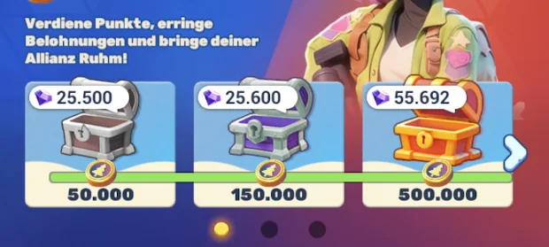
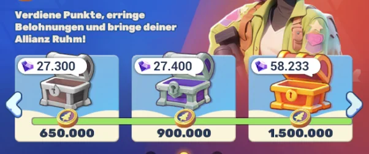
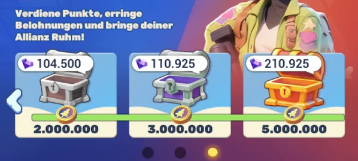
Inhalt jeder Truhe (Screenshots)Contents of each chest (screenshots)Contenu de chaque coffre (captures)Contenuto di ogni forziere (screenshot)Contenido de cada cofre (capturas)Conteúdo de cada baú (capturas)Her chest'in içeriği (ekran görüntüleri)Содержимое каждого сундука (скриншоты)
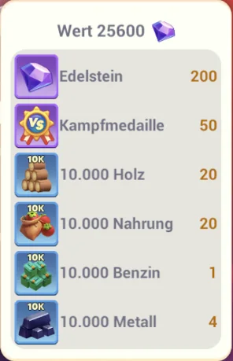
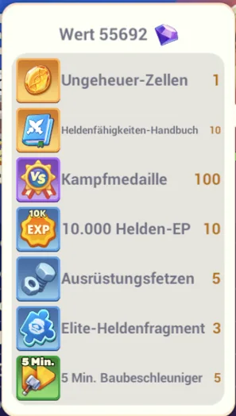
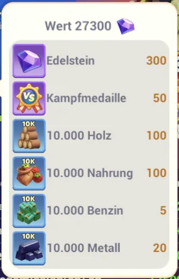
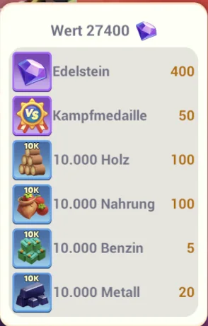
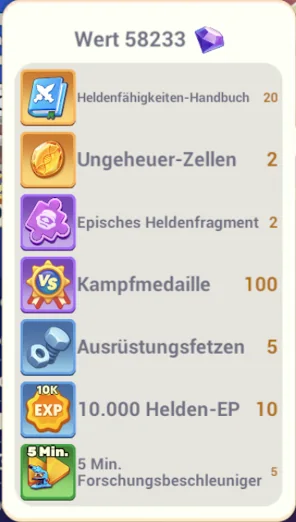
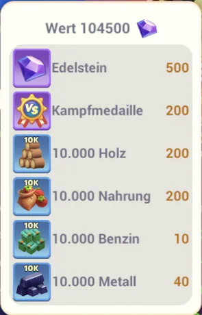
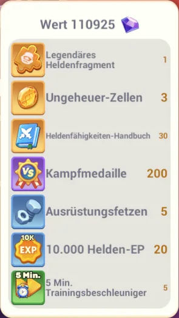
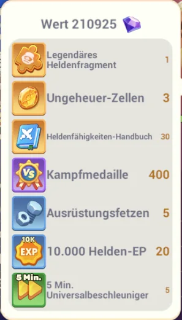
🏅 Tägliche Rang-Belohnung (dein Tagesrang)Daily rank reward (your daily rank)Récompense de rang quotidienne (ton rang du jour)Ricompensa di rango giornaliera (il tuo rango del giorno)Recompensa de rango diaria (tu rango del día)Recompensa de rank diária (o teu rank do dia)Günlük rank ödülü (günlük rank'ın)Ежедневная награда за ранг (твой дневной ранг)
| RangRankRangRangoRangoRankRankРанг | Held.-Fragm.Hero Frag.Frag. hérosFram. eroeFrag. héroeFrag. heróiHero Frag.Hero Frag. | Kampfmed.Battle Med.Battle Med.Battle Med.Battle Med.Battle Med.Battle Med.Battle Med. | EdelsteinGemsGemsGemsGemsGemsGemsGems | FetzenScrapsScrapsScrapsScrapsScrapsScrapsScraps |
|---|---|---|---|---|
| 1 | 5 | 300 | 10.000 | 100 |
| 2 | 4 | 250 | 8.000 | 80 |
| 3 | 3 | 200 | 7.000 | 70 |
| 4–10 | 2 | 150 | 4.000 | 40 |
| 11–30 | 1 | 100 | 1.000 | 10 |
Braucht mindestens 1.500.000 tägliche Duell-Punkte.Requires at least 1,500,000 daily duel points.Nécessite au moins 1.500.000 points de duel quotidiens.Richiede almeno 1.500.000 punti duello giornalieri.Requiere al menos 1.500.000 puntos de duelo diarios.Requer pelo menos 1.500.000 pontos de duelo diários.En az 1.500.000 günlük duel puanı gerekir.Требуется минимум 1.500.000 дневных duel-очков.
🤝 Allianz-BelohnungenAlliance rewardsRécompenses d'allianceRicompense dell'alleanzaRecompensas de alianzaRecompensas de aliançaİttifak ödülleriНаграды альянса
- Teilnahme (täglich):Participation (daily):Participation (quotidienne) :Partecipazione (giornaliera):Participación (diaria):Participação (diária):Katılım (günlük):Участие (ежедневно): 10× 10K-EXP + Ressourcen — ab 500.000 Tagespunkten.10× 10K EXP + resources — from 500,000 daily points.10× 10K EXP + ressources — à partir de 500.000 points quotidiens.10× 10K EXP + risorse — a partire da 500.000 punti giornalieri.10× 10K EXP + recursos — a partir de 500.000 puntos diarios.10× 10K EXP + recursos — a partir de 500.000 pontos diários.10× 10K EXP + kaynaklar — 500.000 günlük puandan itibaren.10× 10K EXP + ресурсы — от 500.000 дневных очков.
- Sieg (wöchentlich):Win (weekly):Victoire (hebdomadaire) :Vittoria (settimanale):Victoria (semanal):Vitória (semanal):Zafer (haftalık):Победа (еженедельно): 800 VS-Medaillen + viele Ressourcen — ab 3.000.000 Wochenpunkten.800 VS Medals + lots of resources — from 3,000,000 weekly points.800 VS Medals + beaucoup de ressources — à partir de 3.000.000 points hebdomadaires.800 VS Medals + molte risorse — a partire da 3.000.000 punti settimanali.800 VS Medals + muchos recursos — a partir de 3.000.000 puntos semanales.800 VS Medals + muitos recursos — a partir de 3.000.000 pontos semanais.800 VS Medals + çok sayıda kaynak — 3.000.000 haftalık puandan itibaren.800 VS Medals + много ресурсов — от 3.000.000 недельных очков.
- Niederlage (wöchentlich):Loss (weekly):Défaite (hebdomadaire) :Sconfitta (settimanale):Derrota (semanal):Derrota (semanal):Yenilgi (haftalık):Поражение (еженедельно): 400 VS-Medaillen + Ressourcen — ab 3.000.000 Wochenpunkten. (Auch bei Niederlage gibt's was!)400 VS Medals + resources — from 3,000,000 weekly points. (You get something even when you lose!)400 VS Medals + ressources — à partir de 3.000.000 points hebdomadaires. (Même en cas de défaite, tu gagnes quelque chose !)400 VS Medals + risorse — a partire da 3.000.000 punti settimanali. (Anche in caso di sconfitta ottieni qualcosa!)400 VS Medals + recursos — a partir de 3.000.000 puntos semanales. (¡Incluso al perder consigues algo!)400 VS Medals + recursos — a partir de 3.000.000 pontos semanais. (Mesmo em caso de derrota ganhas alguma coisa!)400 VS Medals + kaynaklar — 3.000.000 haftalık puandan itibaren. (Yenilgide bile bir şey alırsın!)400 VS Medals + ресурсы — от 3.000.000 недельных очков. (Даже при поражении что-то достаётся!)
🎖️ Kampfmedaille (VS-Medaille)Battle Medal (VS Medal)Battle Medal (VS Medal)Battle Medal (VS Medal)Battle Medal (VS Medal)Battle Medal (VS Medal)Battle Medal (VS Medal)Battle Medal (VS Medal)
Was:What:Quoi :Cosa:Qué:O quê:Nedir:Что: die rote VS-Medaille — Duell-Währung. Bekommst du aus fast jeder Duell-Belohnung (Truhen 50–400, Tagesrang 100–300, Allianz-Sieg 800 / Niederlage 400).the red VS Medal — the duel currency. You get it from almost every duel reward (chests 50–400, daily rank 100–300, alliance win 800 / loss 400).le VS Medal rouge — la monnaie du duel. Tu l'obtiens de presque chaque récompense de duel (coffres 50–400, rang du jour 100–300, victoire d'alliance 800 / défaite 400).il VS Medal rosso — la valuta del duello. La ottieni da quasi ogni ricompensa di duello (forzieri 50–400, rango del giorno 100–300, vittoria dell'alleanza 800 / sconfitta 400).la VS Medal roja — la moneda del duelo. La consigues de casi cualquier recompensa de duelo (cofres 50–400, rango del día 100–300, victoria de alianza 800 / derrota 400).a VS Medal vermelha — a moeda do duelo. Obténs de quase todas as recompensas de duelo (baús 50–400, rank do dia 100–300, vitória da aliança 800 / derrota 400).kırmızı VS Medal — duel para birimi. Neredeyse her duel ödülünden alırsın (chest'ler 50–400, günlük rank 100–300, ittifak zaferi 800 / yenilgi 400).красный VS Medal — валюта дуэли. Ты получаешь её почти из любой duel-награды (сундуки 50–400, дневной ранг 100–300, победа альянса 800 / поражение 400).
Wofür:What for:Pour quoi :A cosa serve:Para qué:Para quê:Ne için:Для чего: An Tag 3 gibt „1 Kampfmedaille ausgeben" +2.500 Punkte (Basis) → vorher sammeln, an Tag 3 ausgeben.On Day 3, "spend 1 Battle Medal" gives +2,500 points (base) → collect beforehand, spend on Day 3.Au jour 3, « dépenser 1 Battle Medal » donne +2.500 points (base) → collecte avant, dépense au jour 3.Al giorno 3, « spendere 1 Battle Medal » dà +2.500 punti (base) → raccogli prima, spendi al giorno 3.En el día 3, « gastar 1 Battle Medal » da +2.500 puntos (base) → reúne antes, gasta en el día 3.No dia 3, « gastar 1 Battle Medal » dá +2.500 pontos (base) → junta antes, gasta no dia 3.Day 3'te „1 Battle Medal harca" +2.500 puan (baz) verir → önceden topla, Day 3'te harca.В Day 3 „потратить 1 Battle Medal" даёт +2.500 очков (база) → копи заранее, трать в Day 3.
Wo ausgeben:Where to spend:Où dépenser :Dove spendere:Dónde gastar:Onde gastar:Nerede harcanır:Где тратить: sehr wahrscheinlich im Labor — damit levelst du die VS-/„Fokus"-Forschungen, die deine Duell-Punkte boosten.very likely in the lab — there you level up the VS/"Focus" research that boosts your duel points.très probablement au labo — tu y montes les recherches VS/« Fokus » qui boostent tes points de duel.molto probabilmente nel laboratorio — lì potenzi le ricerche VS/« Fokus » che potenziano i tuoi punti duello.muy probablemente en el laboratorio — ahí subes las investigaciones VS/« Fokus » que potencian tus puntos de duelo.muito provavelmente no lab — aí sobes as investigações VS/« Fokus » que potenciam os teus pontos de duelo.büyük olasılıkla lab'da — orada duel puanlarını boost'layan VS/„Focus" araştırmalarını yükseltirsin.скорее всего в lab — там ты прокачиваешь VS/„Focus"-исследования, которые усиливают твои duel-очки. final im Client bestätigenconfirm in clientà confirmer dans le clientconfermare nel clientconfirmar en el clienteconfirmar no clientclient'ta teyit etподтвердить в клиенте